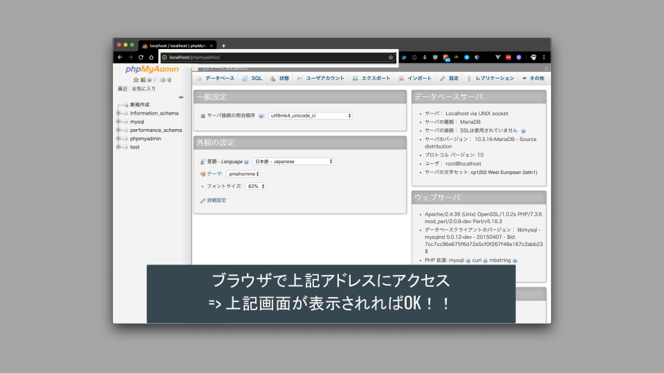
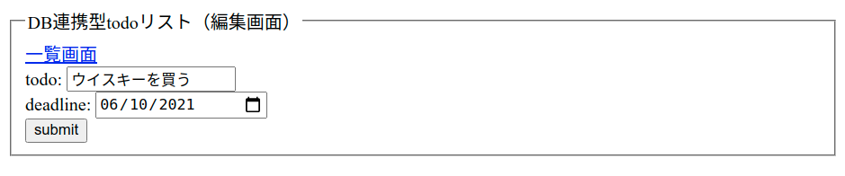
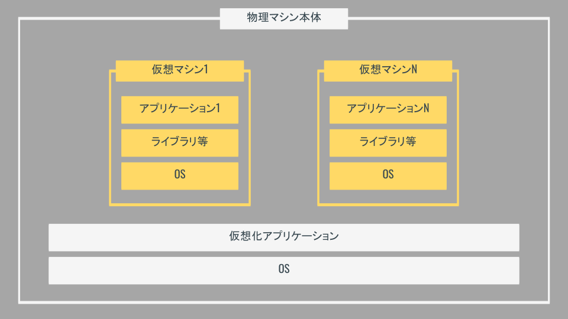
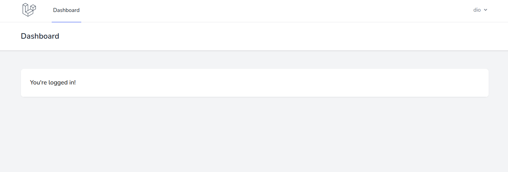
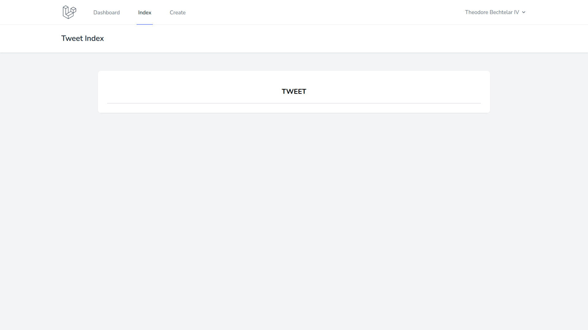
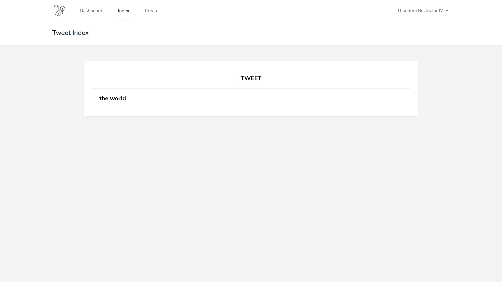
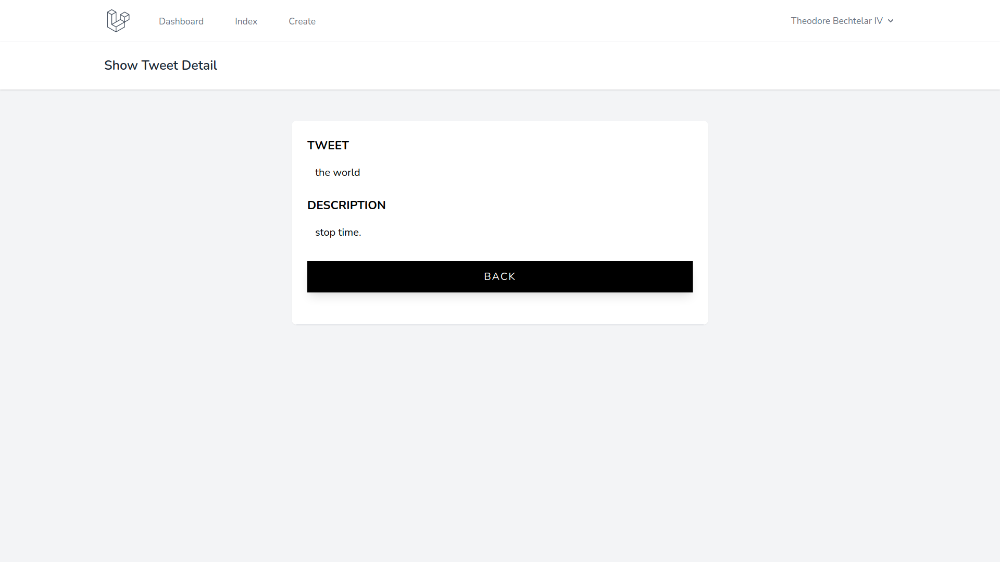

はじめに
内容について
本講座では前半にPHP，後半にLaravelを用いてWebアプリケーションの実装を学びます．
PHPではWebアプリケーションの仕組みや用いられている基礎的な技術を，Laravelでは実際のアプリケーション開発に対する考え方や実践的な開発を扱います．
プログラミング初心者でもできる構成にしています．毎回ハンズオン形式でアプリケーションを実装しながら進めますので，まずはわからなくても手を動かして「コードと動きの対応」を把握しながら進めていきましょう！
講義で使用するサンプルコードは全て下記URLに保存します．毎回の講義前にダウンロードをお願いします！
宿題など
毎回講義での宿題は特にありません．まずは講義内の内容をしっかり実装することが大切ですが，講義だけ受けていてもできるようにはなりません．
特に，講義でははじめてWebアプリ開発を行う方でも「自分の手で実装したWebアプリケーションを動かす」ことができるようにつくっているため，多少経験がある方には物足りないかもしれません．
そこで，そういった方は講義の内容に留まらず試行錯誤しながらガンガンチャレンジしてみましょう！
- 【必須】まず講義内で扱った部分をしっかり実装する（講義中に一通りできるようになっています）．
- 【必須】講義内で全部終わらなかった部分は，次の講義までに必ず実装しておく．わからない部分などあればもう一度講義の内容を実装してみる．
- 【必須ではないけれど推奨】講義で扱った内容を元にオリジナルの機能や処理をつくって動かし，slackにシェアする．
Phase01 の課題について
内容
初級
- Laravel 講義で作成した SNS アプリケーションに何かひとつ以上機能を追加して動作する状態にする．
上級（推奨）
- PHP または Laravel でオリジナルの Web アプリケーションを制作する．
- より実践的な開発にチャレンジするため Laravel をオススメするが，PHP でも可とするので自分のレベルに合わせて選択しましょう．
- 題材は自由とするが，DB と連携している実装とすること．
- こちらにチャレンジする方は早いうちからどんなものつくるかを考えたり，いろいろ試行錯誤して試してみたりしましょう！
締切とスケジュール
2021/10/13 23:59:59 までに所定の形式で提出を完了すること！
- 2021/10/08 phase1 講義ラスト
- 2021/10/13 課題提出完了 & 審査開始
- 2021/10/15 審査完了 & phase1 クリアメンバーの告知
- 2021/10/16 phase2 スタート
提出の形式
大まかな流れは以下のとおりです．
作品は「デプロイする」または「画面収録する」のどちらかとなります．
- readme ファイルを作成する．
- 必要なファイルを指定の共有フォルダに保存する．
- Google フォームに必要な次項を記載して送信する．
共有フォルダは下記 URL の「phase01_課題提出」となります．
【必ず作成】readme ファイルの準備
readme ファイルとはプロダクトの紹介や操作方法を記述した案内です．提出にあたって必ず作成してください！
上記 URL にフォーマット（readme.md）がありますので活用してください！
プロダクトをデプロイした場合
- readme ファイルにプロダクトの紹介や操作方法を記載する．
- readme ファイルにデプロイ先の URL を記載する．
- 「phase01_課題提出フォルダ内の自分の受講番号のフォルダ」に readme ファイルを保存する．
- Google フォームに必要事項を入力して送信する．
デプロイせずに画面収録した場合
- readme ファイルにプロダクトの紹介や操作方法を記載する．
- 自分の PC で readme ファイルに記載した操作方法で操作している様子を画面収録する．
- readme ファイルに 2 で作成したファイル名を記載する．
- 「phase01_課題提出フォルダ内の自分の受講番号のフォルダ」に readme ファイルと 2 で作成した動画ファイルを保存する．
- Google フォームに必要事項を入力して送信する．
【必ず回答】Google フォーム
下記 URL からアクセスして回答してください！
その他
よくわからない場合は，共有フォルダ内の「00」フォルダに画面収録の提出例をつくっておきましたので確認してみてください！
詰まりそうなら早めに「質問チャンネル」へ！
PHP事前準備
サーバとクライアント
サーバで動作する言語（サーバサイド）
- webサーバ上でプログラムが実行される．
- PHP, Ruby, Python, JAVA, (node.js), etc…
クライアント（webブラウザ）で動作する言語（クライアントサイド）
- webブラウザでプログラムが実行される．
- html, css, JavaScript
=>サーバサイド言語の開発にはサーバ上で動作させるアプリケーション（xamppなど）が必要！
（自分のPC上でサーバを動かすイメージ）
サーバのしくみとXAMPPの役割
サーバの役割及び構成
Webアプリケーションはクライアントとサーバの組み合わせで構成されている．
サーバには「アプリケーションサーバ」と「DBサーバ」が存在し，相互に連携することでアプリケーションを構築している．
（詳しい仕組みの理解は後からでOK．）

サーバサイド言語での開発とXAMPPの役割
上記のとおり，PHP（及び他のサーバサイド言語）を動作させるには「サーバ」が必要となる．
しかし，自身のPCで開発を行う場合に都度サーバを用意することは効率的ではない．
このような場合に自身のPC内で擬似的なサーバを用意してPHPを動作させることができるのが「xampp」である．
xamppは以下の役割を提供する．
- PHPを動作させるアプリケーションサーバ（
Apatch web server）を用意する． - データを保存するためのデータベース（
MySQL Database）を用意する． - その他いろいろ（今回の開発では使用しない）．

XAMPP環境構築
ダウンロード
下記URLにアクセスする．
https://www.apachefriends.org/jp/download.html
！！注意！！
資料作成時時点では
7.3.6 / PHP 7.3.6となっているが，現時点（2021/09/12）では8.0.9 / PHP 8.0.9が最新なのでこちらを用いること！！上記バージョンより新しいものが表示される場合は最新版をインストールしてください！
↓アクセス画面

Macの人は下記からダウンロード．

Windowsの人は下記からダウンロード．

インストール
ダウンロードしたらインストールを進める．

動作確認（サーバ起動）
インストールが済んだらアプリケーションを立ち上げる．
Macの人は以下のようにサーバを起動させる．

Windowsの人は以下の画面．

動作確認（画面表示）
アプリケーションサーバ動作確認
ブラウザでhttps://localhost/にアクセスして下記画面が表示されればOK．

DBサーバ動作確認
ブラウザでhttps://localhost/phpmyadminにアクセスして下記画面が表示されればOK．

まとめ
下記3点が実施できていることを確認しよう！
- XAMPPの起動確認
- http://localhost/のアクセス確認
- http://localhost/phpmyadminのアクセス確認
PHP基礎
本講義の内容とゴール
本講義の内容
- Webアプリケーションの仕組み．
- PHPの基本的な開発手順．
- PHPを用いた簡単な処理の実装．
本講義のゴール
- Webアプリケーションの仕組みをと動きを把握する（大事）！
- PHP（の開発手順）に慣れる！
- PHPを用いたデータの送受信を通して，アプリケーションの動きをイメージする．
準備
以下3点ができているか確認しよう！
- XAMPPの起動確認
- http://localhost/のアクセス確認
- サンプルフォルダを「htdocs」フォルダに入れる
PHP概要
Webアプリケーションの仕組み（動き方）
Webアプリケーション（のソースコード）は世界のどこかにある「サーバ」に置かれている．

Webアプリケーションを使用するときは，Webブラウザに「URL」を指定する．
- Webブラウザから「http」方式でURLに「リクエスト」を送る．
- URLはWeb上にたくさんあるファイルを必ず1つ指定できるようになっている（ユニークな文字列）．
URLの構造は下記のようになっている．
https://www.emperor-crimson.com/data/status.php
^ ^ ^ ^
| | | |
scheme hostname（サーバ名） directory filename
サーバ - クライアント型のアプリケーション
サーバで動作する言語（サーバサイド）
サーバ上でプログラムが実行される．

- PHP
- Ruby
- Python
- JAVA
- Node.js
- etc...
クライアント（webブラウザ）で動作する言語（クライアントサイド）

webブラウザがプログラムを実行する．
- HTML
- CSS
- JavaScript
サーバサイドの役割
様々なWebアプリケーションが存在するが，基本のサーバサイド処理は同様である．
基本の機能は何らかのデータを扱うことである．
例
- twitter => ツイート，検索，タイムラインの表示，etc
- facebook => 投稿，検索，記事の更新，コメント，etc
- wordpress => ブログ記事の投稿，編集，削除，etc
※：アプリケーションは必ずしもPHPで作られているわけではない！！
💡 Key Point
上記の処理は以下の4つに集約される．
- 📝 データの「作成」（Create）
- 📖 データの「参照」（Read）
- 🔄 データの「更新」（Update）
- 🗑 データの「削除」（Delete）
これら4種類の処理の頭文字をとって「CRUD」と呼ぶ．
PHP基礎
サーバサイド言語での開発
PHP（及び他のサーバサイド言語）を動作させるには「サーバ」が必要となる．
しかし，自身のPCで開発を行う場合に都度サーバを用意することは効率的ではない．
このような場合に自身のPC内で擬似的なサーバを用意してPHPを動作させることができるのが「xampp」である．
xamppは以下の役割を提供する．
- PHPを動作させるアプリケーションサーバ（
Apatch web server）を用意する． - データを保存するためのデータベース（
MySQL Database）を用意する． - その他いろいろ（今回の開発では使用しない）．

開発の手順
xamppはPC内にlocalhostというサーバを用意してくれる．
このサーバ内にPHPファイルを配置することでPHPのコードを動かすことができる．
PC内では予め指定されたディレクトリ（htdocs）がサーバの役割をするよう決められているため，まずPHPファイルを指定のディレクトリに配置する作業が必要となる．
サンプルフォルダを下記のディレクトリへ移動するとPHPを動かせる！
- windows :
C\xampp\htdocs\ - mac :
/Applications/xampp/xamppfiles/htdocs/
便利な設定
htdocsはよく使うのでショートカットを用意しておくと便利！！htdocs内に講義用のフォルダを用意しておくと管理しやすい！htdocs内のindex.phpの名前をindex.php.oldに変更しておくとブラウザ画面からhtdocs内のファイルが確認できて便利！！
💡 Key Point
【重要】開発の手順は以下の流れとなる．
- xamppを起動する
- phpファイルが入ったフォルダをhtdocsに配置
- vs codeでhtdocsの上記フォルダを開く
- phpのコードを書く
- ブラウザでlocalhostにアクセスして動作確認
以降，3-5の繰り返し！
※一通り終わったらxamppを終了させることを推奨（次回起動でコケる）
PHP基礎
PHPの記述
PHPは「PHPファイル」に記述する．
PHPファイルの作成
- 拡張子を「
.php」にする． - 例：「
index.php」「create.php」など．
開始タグと終了タグ
- 「
<?php」で始まり「?>」で終了（phpしか書かない場合，終了タグは省略可）． - 開始タグと終了タグの間に書かれた処理がサーバ上で実行される！
- タグ以外の部分（HTMLなど記述した場合）はサーバでは実行されない（そのままソースコードがブラウザに送信される）．
<?php
// ここにPHPの処理を書く
// ...
?>
// ここから下に書いたコードはサーバで実行されない
// （HTMLなどを書く）
変数と文字列
変数の扱いはJavaScriptと大きく変わらないが，以下の点に注意する．
- 変数名は必ず「
$****」←$で始めるルール！ - 文字列はシングルクォーテーションかダブルクォーテーションで囲む．
$の次に数字はNG（JavaScriptと同様）．_などの記号はOK．
// 数値
$number = 100;
// 文字列
$name = 'engineer';
// 数値スタートはNG
$1lang = 'php';
// 後の数字はOK
$lang2 = 'javascript';
// 記号もOK
$_lang = 'Rust';
変数と文字列は「.」でつなげる．
ダブルクォーテーションを用いる場合は{}で変数を埋め込むことができる（JavaScriptの``と${}に相当）．
$str1 = 'ジーズで' . $lang2 . 'を勉強中！';
// こっちのほうが楽かな．．！
$str2 = "ジーズで{$lang2}を勉強中！";
配列と連想配列
配列
JavaScriptと同様の形式．
データを確認する際にはechoまたはvar_dump()を用いる．
echoで値自体を出力する．var_dump()では配列などの構造も見られる．- デバッグの基本は
var_dump()（JavaScriptのconsole.log()的な）！！！
// 配列
$array = ['JavaScript', 'PHP', 'Rust', 'COBOL'];
// `echo`で画面上にデータを表示できる．
echo $array[2]; // Rust
// 変数や配列の中身や構造を表示
var_dump($array);
連想配列
連想配列はJavaScriptにおける「オブジェクト」に相当する．
- 「キー」「バリュー」のセット．
- キー名を指定して値を取り出すことができる．
// 連想配列
$array2 = [
"フロント" => "JavaScript",
"サーバ" => "PHP",
"iOS" => "Swift",
"関数型" => "Haskell"
];
// キー名を指定して値を取り出す
echo $array2['サーバ'];
条件分岐
条件分岐の構文はJavaScriptと同様．
// 0から1のランダムな数を発生させる
$number = rand(0, 1);
// 1かそれ以外で条件分岐
if ($number == 1) {
echo '値は1です';
} else {
echo '値は1以外です';
}
条件分岐を使用したおみくじの例
// 1から5の乱数を作成
$random_number = rand(1, 5);
// 乱数の値で条件分岐
if ($random_number == 1) {
$result = '大吉';
} elseif ($random_number == ...) {
$result = ...
} elseif (...) {
// ...
}
echo $result;
PHPとHTMLの組み合わせ
echoで処理結果を出力できるが，ブラウザに値が表示されるだけで気が利いていない．
そこで，PHPとHTMLを組み合わせて画面を作成する機能を利用してみる．
- html内に
<?=変数名?>と記述することでPHPの変数を埋め込める． - PHPで処理した結果からHTMLをつくるイメージ．
<?php
// いろいろな処理
$result = '大吉';
?>
// ここからhtmlの記述
<!DOCTYPE html>
<head>
// 省略
</head>
<body>
<h1>今日の運勢は<?=$result?>です！</h1>
</body>
</html>
💡 Key Point
PHPとHTMLが動く順序を把握しよう！
- PHPの処理が実行される．
- 処理の結果作成された値がHTMLに埋め込まれ，HTMLが完成する．
- HTMLのデータがブラウザに送信される．
- ブラウザがHTMLの内容を画面に表示する．
PHPの練習
omikuji.phpにおみくじの処理を作成し，HTMLと組み合わせて画面に結果を表示しよう．
クライアント - サーバ間の通信
サーバへデータを送る，とは？？
htmlファイルやphpファイルから別のphpファイルへデータを送る． データを受け取ったphpファイルがDBへの保存などの処理を実行．
データ送信には以下の2種類が存在する．
- GET
- POST
どちらの場合も手順は同様．
💡 Key Point
必ず送信側ファイルと受信側ファイルの2つでやり取りを行う．
GETでのデータ送受信
GET方式でデータをやり取りする場合の流れ．
送信側の処理
<form></form>を用いてデータを送信する．必ず以下の3項目を設定する．
- データの送信宛先（
action="data_get_confirm.php"）． - データの送信方法（
method="GET"）． - データの項目名（
name="hoge"）．
受信側の処理
- 送信されたデータは
$_GET変数に値が格納される． $_GETは連想配列形式となっており，送信側のnameで設定した値がキーとなる．- 個別の値を取り出して変数に格納すれば，後は通常の変数として処理可能．
送信側のコード
// data_get.php
// formタグに`action`と`method`を記述
// 個々の項目（inputタグ）に`name`を指定する
<form action="data_get_confirm.php" method="GET">
<div>
todo: <input type="text" name="todo">
</div>
<div>
deadline: <input type="date" name="deadline">
</div>
</form>
受信側のコード
- GETで送信された情報は
$_GETに入って送られる． - まず「情報が受け取れているかどうか」をチェックすることが大事！！
- （情報が受け取れないと以降どうしようもない）
exit()は以降の処理を中止する．
// data_get_confirm.php
<?php
// 必ず最初にチェック！！内容を確認したらコメントアウトすること．
var_dump($_GET);
exit();
// キー名に送信元ファイルのname属性を指定する．
$todo = $_GET['todo'];
$deadline = $_GET['deadline'];
?>
GET方式の特徴
- サーバから情報を取得する． URLに情報を追加して送信できる．
- データの特定（自分の名前で検索）など，少量のデータ送信に向く（URLにデータが含まれている）．
- URLにデータが含まれるため，URLをシェアするだけでデータを共有できる．
POSTでのデータ送受信
POST方式でデータをやり取りする場合の流れ（ほとんどGETと同様）．
送信側の処理
<form></form>を用いてデータを送信する．必ず以下の3項目を設定する．
- データの送信宛先（
action="data_post_confirm.php"）． - データの送信方法（
method="POST"）． - データの項目名（
name="hoge"）．
受信側の処理
- 送信されたデータは
$_POST変数に値が格納される． $_POSTは連想配列形式となっており，送信側のnameで設定した値がキーとなる．- 個別の値を取り出して変数に格納すれば，後は通常の変数として処理可能．
送信側のコード
// data_post.php
// formタグに`action`と`method`を記述
// 個々の項目（inputタグ）に`name`を指定する
<form action="data_post_confirm.php" method="POST">
<div>
todo: <input type="text" name="todo">
</div>
<div>
deadline: <input type="date" name="deadline">
</div>
</form>
受信側のコード
- POSTで送信された情報は
$_POSTに入って送られる． - 以降の流れは
GETの場合と同様．
// data_post_confirm.php
<?php
// POSTの場合も必ず最初にチェック！！
var_dump($_POST);
exit();
// キー名に送信元ファイルのname属性を指定する．
$todo = $_POST['todo'];
$deadline = $_POST['deadline'];
?>
POST方式の特徴
- サーバにデータを送信するときに使用．情報を見えないように送信する方法
- 個人情報など．（送れるデータ量がGETと比較して多い）
- ファイルを送信する場合にも使用
【参考】XSS : クロスサイトスクリプティング
formに悪意あるJavaScriptを埋め込まれて実行される場合がある．
HTMLにデータを埋め込む際に対策できる．
<?php
$hoge = $_POST['hoge'];
?>
// ここからhtmlの記述
<!DOCTYPE html>
<head>
// 省略
</head>
<body>
<p>JavaScriptが送信されると実行されてしまいます<?=$hoge?></p>
<p>ただの文字列として処理されます<?=htmlspecialchars($hoge, ENT_QUOTES);?></p>
</body>
</html>
次の項では，データ送信機能を用いて検索処理を実装してみよう．
パラメータ送信による検索機能の実装
サーバへのデータ送信を用いて，ユーザの入力値によるデータ検索を実装してみよう．
細かい処理はググりながら書けるので，まずは全体の流れを押さえるのが大事ッ！！
処理の流れ
- ユーザがデータを入力する画面を準備する．
- 検索ボタンクリックでサーバにユーザが入力したデータを送信する．
- サーバ側では，受け取ったキーワードを用いて予め用意されたデータの中から該当するものを抽出し，画面を構成する．
データの確認
今回は下記のデータを使用する（すでにファイル内にデータ用意済）．
入力画面でキーワードを入力し，下記のデータの中からキーワードが含まれるものだけを抽出して画面に表示する．
| id | name | hero | rival |
|---|---|---|---|
| 1 | ファントムブラッド | ジョナサン・ジョースター | ディオ・ブランドー |
| 2 | 戦闘潮流 | ジョセフ・ジョースター | カーズ |
| 3 | スターダストクルセイダース | 空条承太郎 | DIO |
| 4 | ダイヤモンドは砕けない | 東方仗助 | 吉良吉影 |
| 5 | 黄金の風 | ジョルノ・ジョバァーナ | ディアボロ |
| 6 | ストーンオーシャン | 空条徐倫 | エンリコ・プッチ |
| 7 | スティール・ボール・ラン | ジョニィ・ジョースター | ファニー・ヴァレンタイン |
| 8 | ジョジョリオン | 東方定助 | 透龍 |
ユーザ入力データの送信
まずは検索フォームを用意し，GET でサーバにデータを送信する．
送信側では下記を設定！
- 宛先（
action="data_select.php"） - メソッド（
method="get"） - データ名（
name="keyword"）
// data_input.php
<form action="data_select.php" method="get">
<fieldset>
<legend>検索キーワード入力画面</legend>
<div>
keyword: <input type="text" name="keyword">
</div>
<div>
<button>検索</button>
</div>
</fieldset>
</form>
データの受け取り
データを受け取る場合には必ずvar_dump()を用いてデータを受け取れていることを確認する．
// data_select.php
var_dump($_GET);
exit();
キーワードを用いた検索と画面の構成
- 受け取ったキーワードを用いて，該当するデータのみ含まれる配列を作成する．
id，name，hero，rivalいずれかにキーワードが含まれていれば OK とする． - 作成した配列から，画面を構成するためのタグを構成する．
// data_select.php
$keyword = $_GET['keyword'];
// 用意されたデータからキーワードがヒットするものを抽出する処理
$results = array_filter($data, function ($x) use ($keyword) {
return str_contains($x['id'], $keyword)
|| str_contains($x['name'], $keyword)
|| str_contains($x['hero'], $keyword)
|| str_contains($x['rival'], $keyword);
});
$output = '';
foreach ($results as $result) {
$output .= "<tr><td>{$result['id']}</td><td>{$result['name']}</td><td>{$result['hero']}</td><td>{$result['rival']}</td></tr>";
}
構成したタグを HTML 部分に埋め込み．
// data_select.php
// 省略
<body>
<fieldset>
<legend>検索結果</legend>
<a href="data_input.php">入力画面</a>
<table>
<thead>
<tr>
<th>id</th>
<th>name</th>
<th>hero</th>
<th>rival</th>
</tr>
</thead>
<tbody>
<!-- ここに`<tr><td>'id'</td><td>'name'</td><td>'hero'</td><td>'rival'</td></tr>`の形式でデータが表示する -->
<?= $output ?>
</tbody>
</table>
</fieldset>
</body>
// 省略
💡 Key Point
処理の流れを把握するのが大事！！
- ユーザが画面に入力したキーワードをサーバに送信する．
- サーバでキーワードを受け取り，もともと存在するデータからヒットするものを抽出する．
- ヒットしたデータを元にHTMLをつくる．
- HTMLのデータがブラウザに送信される．
- 画面にHTMLが表示される．
練習
data_input.phpとdata_select.phpに上記の処理を記述して動作を確認しよう！
data_input.phpのフォーム部分にデータ送信のためのコードを記述しよう．data_select.phpでデータが受け取れることを確認！data_select.phpで受け取ったデータを用いてデータを検索し，画面に表示する処理を記述！
data_input.phpから検索キーワードを送信し，キーワードが含まれるデータのみ抽出されて表示されれば OK！
PHP_DB連携_CRUD処理前半
本講義の内容とゴール
本講義の内容
- DBの基本的な扱い．
- SQLを用いたDB操作（データ作成，データ参照）．
- PHP上でのSQL実行とtodoリスト（Webアプリケーション）の連携を実装．
本講義のゴール
- DBの構成や動き方を理解する！
- SQLでDBを操作する基本を理解する！
- PHPでDBを操作できるようになる！
今回の内容を実装できるようになると，Webアプリケーションのかなりの部分が実現できる！！
準備
以下4点ができているか確認しよう！
- XAMPPの起動確認
- http://localhost/のアクセス確認
- http://localhost/phpmyadminのアクセス確認
- サンプルフォルダを「htdocs」フォルダに入れる（前回と同じ要領）
DBの基本
DBとは
- web上にデータを保存するためのもの．
- 構造はエクセルなどと対比するとイメージしやすい！
- データを操作するにはSQL（言語）を用いる．
使い所
- webアプリケーションでデータを保存する場合のほとんど．
利用シーンの例
- ECサイトの商品データ（商品名，画像，説明文）
- サービスに登録しているユーザの情報（ユーザ名，アドレス，etc）
- ブログの投稿内容（投稿日時，タイトル，画像，本文，etc）
DBのデータ構造と概念
エクセルと同様のデータ構造となっている．実際にデータが格納されるのは「テーブル」であり，テーブルをどう設計するかがアプリケーションの根幹となる．
| DBの概念 | エクセルの概念 |
|---|---|
| データベース | エクセルファイル |
| テーブル | シート |
| レコード | 行 |
| カラム | 列 |
💡 Key Point
テーブル設計を行う際には，エクセルやスプレッドシートに書き出しながら作業すると視覚的に確認できるのでオススメ．
データ構造の例
ECサイトの商品データをイメージしたテーブルを下記に示す．
（下記のデーブル構造はまだ改善点があるが，後の講義で解説する．）
| id | product_name | price | category | image_url |
|---|---|---|---|---|
| 1 | Laphroaig | 40 | whisky | ./images/laphroaig.png |
| 2 | Ardbeg | 45 | whisky | ./images/ardbeg.png |
| 3 | Caolila | 50 | whisky | ./images/caolila.png |
| 4 | Kilchoman | 50 | whisky | ./images/kilchoman.png |
| 5 | Bowmore | 45 | whisky | ./images/bowmore.png |
| 6 | PortCharlotte | 55 | whisky | ./images/portcharlotte.png |
| ... | ... | .. | ... | ... |
DBの動き方のイメージ
「サーバ」には3種類存在し，相互に連携しながらWebアプリケーションを動作させている．ただし，Webサーバとアプリケーションサーバは区別の概念が難しいため，一旦「DBサーバとそれ以外」という理解で進めてしまってOK．
- 「Webサーバ」：ブラウザにデータを返す．
- 「アプリケーションサーバ」：PHPなどのサーバサイド言語を動かす．
- 「DBサーバ」：データを提供する．
ブラウザ，PHP，DBが連携するイメージを以下に示す．

💡 Key Point
処理の流れを把握しよう！
例えば，PHPとDBを連携させ，保存されているデータを画面に表示する流れは以下のとおりとなる．
- PHPからDBサーバに接続する．
- DBを操作するSQLを実行し，必要なデータを取得する．
- 取得したデータをHTML上に反映させ，画面に表示する．
DB / テーブルの作成
DBの作成
まずは基本単位となるDBを作成する．
1つのアプリケーションに対して1つのDB，というイメージでOK．
- http://localhost/phpmyadmin/にアクセス
- 「
Databases」タブをクリック - 「
Database name」に「dec_todo」を入力（DB名） - 「
utf8mb4_unicode_ci」を選択→「作成」をクリック
正常に作成されると，画面左側に作成したDB名が表示される．
テーブルとカラムの作成
今回実装するtodoリストのデータ用テーブルを準備する．
テーブルは1つのDB内に複数作成し，相互に連携してWebアプリケーションのデータを構築する．
テーブルの作成
以下の手順でテーブルを作成しよう．
- 左側のDB一覧から前項で作成したDBを選択する．
- 名前欄に「
todo_table」を入力（テーブル名）． - カラム数を「5」に設定する．
- 「Go」ボタンをクリック．
カラムの設定
テーブルに格納されるデータは定められた形式（文字列，数値，日付など）で保存しなければならない．
カラム設定時，各カラムに「名前」と「データ型」を設定する必要がある．下記の表に従ってカラム名とデータ型を設定しよう．
| カラム名 | データ型 | 長さ | その他設定項目 |
|---|---|---|---|
id | INT | 12 | インデックスを「PRIMARY」に設定．「A_I」にチェック． |
todo | VARCHAR | 128 | |
deadline | DATE | - | |
created_at | DATETIME | - | |
updated_at | DATETIME | - |
- idは単一のデータを取得するためのもので，インデックスを「PRIMARY」に設定する必要がある．
- また，idは自動的に数値を1から順に振るため，「A_I（Auto Increment）」にチェックしておく
全て入力したら右下の「保存する」をクリック！！
SQLによるDB操作
SQLとは
DBの操作には「SQL（言語）」を使用する．
PHPでDBを操作するときは，コード内でSQL文を実行する．
フレームワークなどではコード内では実行しない場合もある．ただし，フレームワークが関数の実行結果としてSQLを生成して実行するため，DB操作は必ずSQLで行われる．
基本のSQL4種
まずはデータ操作の基本となる4種類を押さえましょう！
INSERT：データの「作成」SELECT：データの「参照」UPDATE：データの「更新」DELETE：データの「削除」
※SQL文は大文字で記載していますが，小文字でも動作する．他の言語（本講座ではPHP）と組み合わせる際に区別しやすいよう大文字で記載している．他の言語でも大文字で扱うことが多い．
INSERT（データの作成）
指定したテーブルに対して新規データの作成を行う．
ポイントは以下！
- 「カラム名の数と順序」と「値の数と順序」を一致させる必要がある．
idカラムはDB側でAuto incrementの設定をしているためNULLを送信する．- 作成日時や更新日時は
now()を使用して実行時の日付時刻が入力されるようにする．
-- INSERT文の基本構造
INSERT INTO テーブル名 (カラム1, カラム2, ...) VALUES (値1, 値2, ...);
-- 例
INSERT INTO todo_table (id, todo, deadline, created_at, updated_at) VALUES(NULL, 'SQL練習', '2021-12-31', now(), now());
SELECT（データの参照）
SELECT文はデータの参照に使用されるが，フィルタリングやソートなど多様なオプションが用意されている．
SELECT文の基本
-- SELECT文の基本構造
SELECT 表示するカラム名 FROM テーブル名;
-- 例
-- 「*」で全て指定
SELECT * FROM todo_table;
-- 1つのカラムを指定
SELECT todo FROM todo_table;
-- 複数カラム指定
SELECT todo, deadline FROM todo_table;
フィルタリング
データの条件を設定してフィルタリングをおこなうことができる．フィルタリングにはWHEREを使用する．
-- 「WHERE」を使用して値の条件を指定できる
SELECT * FROM todo_table WHERE deadline='2021-12-31';
-- 演算子の使用
SELECT * FROM todo_table WHERE deadline <= '2021-12-31';
SELECT * FROM todo_table WHERE deadline >= '2021-12-01' AND deadline <= '2021-12-31';
-- あいまい検索
SELECT * FROM todo_table WHERE todo LIKE 'PHP%';
SELECT * FROM todo_table WHERE todo LIKE '%提出';
SELECT * FROM todo_table WHERE todo LIKE '%課題%';
ソート
並び替えにはORDER BYを使用する．
- 基準となるカラム名を指定し，
- 昇順（
ASC）か降順（DESC）を指定する．
-- ORDER BYを使用した並び替え
-- `deadline`カラムの値で降順に並び替え
SELECT * FROM todo_table ORDER BY deadline DESC;
-- `todo`カラムの値で昇順に並び替え
SELECT * FROM todo_table ORDER BY todo ASC;
取得するデータ件数の制限
LIMITを用いてデータ件数の制限を行うことができる．最新10件，などの使い方がメジャー．
-- LIMITで表示件数の制限
SELECT * FROM todo_table LIMIT 5;
-- 並び替えとの組み合わせ
SELECT * FROM todo_table ORDER BY deadline DESC LIMIT 5;
UPDATE（データの更新）
UPDATEは次回の講義で扱う．
-- UPDATE文の基本構造
UPDATE テーブル名 SET 変更データ WHERE 選択データ;
-- 例
UPDATE todo_table SET todo='PHP課題' WHERE id = 1;
-- 【重要】必ずWHEREを使用！！（忘れると全てのデータが更新されます．．！）
DELETE（データの削除）
DELETEは次回の講義で扱う．
-- DELETE文の基本構造
DELETE FROM テーブル名;
-- 例
-- 全消去
DELETE FROM todo_table;
-- 指定データのみ
DELETE FROM todo_table WHERE id = 2;
-- WHEREで指定しないとテーブルのデータが全滅する！！
-- DELETEすると復旧できないので注意！！
【参考】SQLの練習
初歩から応用までSQL問題が出題．当面は最初の方の基本的なデータ取得ができればOK．
練習
SQLはphpmyadminの「SQLタブ」から記述&実行できる．
- INSERT文を用いて
todo_tableにデータを10件程度作成しよう． - SELECT文を用いて作成したデータを取り出そう．
- WHERE, ORDER BY, LIMITを試して，想定どおりのデータを取得できるかどうか確認！
PHPとDBの連携（データ作成処理）
必要なファイル
todo_input.php：データ入力画面．todo_create.php：DB接続，データ作成処理を実行．
処理の流れ
todo_input.phpで入力されたデータをtodo_create.phpへ送信（post）．todo_create.phpでデータを受け取り，DBへの新規データ作成．- 作成完了後，
todo_input.php（入力画面）へ移動．（todo_create.phpでは画面表示なし）
送信側の処理
フォームからデータを送信する．以下3点の漏れやスペルミスがないよう確認しよう．
- action
- method
- name
// todo_input.php
<form action="todo_create.php" method="POST">
<fieldset>
<div>
todo: <input type="text" name="todo">
</div>
<div>
deadline: <input type="date" name="deadline">
</div>
<div>
<button>submit</button>
</div>
</fieldset>
</form>
受信側の処理
データ受け取り側では以下の処理を実装する．
- 必須項目の入力チェック
- データの受け取り
- DB接続
- SQL作成&実行
- SQL実行後の処理
入力チェック
DBにデータを格納する場合，基本的にデータの欠損は許されない（データなしを許可する設定もある）．
そのため，以下の条件に合致する場合は以降の処理を中止してエラー画面を表示する．
- 必須項目（todoとdeadline）のデータが送信されていない．
- 必須項目（todoとdeadline）が空で送信されている．
// todo_create.php
if (
!isset($_POST['todo']) || $_POST['todo']=='' ||
!isset($_POST['deadline']) || $_POST['deadline']==''
) {
exit('ParamError');
}
【参考】エラーメッセージを出力する意味
どこで失敗したのかをわかるようにする！
- PHPではエラーを見つけづらい．．．
- データを扱うので，異常なデータなどが作成されるとまずい．
- どこでエラーが出ているのかわからないと詰む．
- エラーにも種類がある！
- どこでうまくいっていないのかを把握できるようにエラーの処理を記述！
データ受け取り
前回講義の場合と同様．今回はPOSTで送信しているため$_POSTで受け取る．
// todo_create.php
$todo = $_POST['todo'];
$deadline = $_POST['deadline'];
DB接続
DBに接続するコードは決まった形式（PDO）．
接続の際には以下の情報が必要になる．今回はdbnameのみ設定が必要．
mysql：DBの種類（他にPostgreSQL，Oracle Database，などが存在する）dbname：DBの名前（今回はここをdec_todoに設定する！）port：接続ポートhost：DBのホスト名username：DB接続時のユーザ名password：DB接続時のパスワード
// todo_create.php
// 各種項目設定
$dbn ='mysql:dbname=YOUR_DB_NAME;charset=utf8;port=3306;host=localhost';
$user = 'root';
$pwd = '';
// DB接続
try {
$pdo = new PDO($dbn, $user, $pwd);
} catch (PDOException $e) {
echo json_encode(["db error" => "{$e->getMessage()}"]);
exit();
}
// 「dbError:...」が表示されたらdb接続でエラーが発生していることがわかる．
SQL作成&実行
SQL（今回はINSERT文）を実行する場合も手順が決まっている．
- SQL文の記述．
- バインド変数の設定．
- SQL実行．
// todo_create.php
// SQL作成&実行
$sql = 'INSERT INTO todo_table (id, todo, deadline, created_at, updated_at) VALUES (NULL, :todo, :deadline, now(), now())';
$stmt = $pdo->prepare($sql);
// バインド変数を設定
$stmt->bindValue(':todo', $todo, PDO::PARAM_STR);
$stmt->bindValue(':deadline', $deadline, PDO::PARAM_STR);
// SQL実行（実行に失敗すると$statusにfalseが返ってくる）
$status = $stmt->execute();
【補足】バインド変数とSQLインジェクション
SQLインジェクションと呼ばれるハッキング手法が存在する．
例えば，下記のようにコードを記述されている場合．．．
$query = "SELECT * FROM user WHERE id = '$user_id'";
$user_idに「' or 'A' = 'A」を入れると，下記と同じ意味になってしまう！
SELECT * FROM user;
-> 不正にユーザのデータを取得できてしまう！！！
バインド変数を用いることで，SQL文として実行されないようにできる！
ユーザが入力した値をSQL文内で使用する場合には必ずバインド変数を使用すること．
SQL実行時の処理
実行に失敗すると$statusにfalseが返ってくるため，条件分岐して失敗を検出する．
$stmt->errorInfo()と記述することでエラー内容（配列形式）を取得することができ，2番めのデータにエラーメッセージが格納されている．
SQLが正常に実行された場合は，データ入力画面に移動することとする．
// todo_create.php
if ($status == false) {
$error = $stmt->errorInfo();
exit('sqlError:'.$error[2]);
} else {
header('Location:todo_input.php');
exit();
}
練習
DBにデータを追加する処理を実装しよう！
todo_input.phpにフォームを作成todo_create.phpで- データを受け取る
- DBに接続
- SQL文を書いて実行
phpmyadminでテーブルを確認し，データが作成されていればOK！
- phpmyadminの「表示」タブをクリックすると最新のデータを読み込める．
PHPとDBの連携（データ参照処理）
必要なファイル
todo_read.php：DBからデータを取得してデータの一覧画面を作成する．
処理の流れ
- 表示ファイル（
todo_read.php）へアクセス時，DB接続する． - データ参照用SQL作成→実行．
- 取得したデータをHTMLに埋め込んで画面を表示．
※必要に応じて，並び替えやフィルタリングを実施してみよう．
DBデータ作成処理の実装
DB接続
新規データ作成の場合と同様の処理（DB名の設定を忘れずに！）．
// todo_read.php
$dbn ='mysql:dbname=YOUR_DB_NAME;charset=utf8;port=3306;host=localhost';
$user = 'root';
$pwd = '';
try {
$pdo = new PDO($dbn, $user, $pwd);
} catch (PDOException $e) {
echo json_encode(["db error" => "{$e->getMessage()}"]);
exit();
}
SQL作成&実行
データ作成処理と同様にSQLを記述して実行する．今回は「ユーザが入力したデータ」を使用しないのでバインド変数は不要．
また，$statusには実行結果が入るが，この時点ではまだデータ自体の取得はできていない点に注意．
// todo_read.php
$sql = 'SELECT * FROM todo_table';
$stmt = $pdo->prepare($sql);
$status = $stmt->execute();
SQL実行後の処理
SQLの実行に失敗した場合はエラーを表示して処理を中止する．
SQLが正常に実行された場合は以下の流れで処理が実行される．
fetchAll()関数でデータ自体を取得する．- 繰り返し処理を用いて，取得したデータからHTMLタグを生成する．
- （HTML内の任意の位置に作成したタグを設置
// todo_read.php
if ($status == false) {
$error = $stmt->errorInfo();
exit('sqlError:'.$error[2]);
} else {
$result = $stmt->fetchAll(PDO::FETCH_ASSOC);
$output = "";
foreach ($result as $record) {
$output .= "
<tr>
<td>{$record["deadline"]}</td>
<td>{$record["todo"]}</td>
</tr>
";
}
}
HTMLにタグを埋め込み
// todo_read.php
// html部分にデータを追加
<tbody>
<!-- ↓に<tr><td>deadline</td><td>todo</td><tr>の形でデータが入る -->
<?= $output ?>
</tbody>
【参考】JSを用いたタグ生成
上記では「PHP内でタグを生成 → HTML内に埋め込み」という実装を行っているが，タグ生成部分をJSで行うこともできる．
どちらが正解というものではないので，自身のイメージしやすいパターンで実装すれば問題ない．
<?php
// DB接続，SQL実行など
if ($status == false) {
$error = $stmt->errorInfo();
exit('sqlError:'.$error[2]);
} else {
// PHPではデータを取得するところまで実施
$result = $stmt->fetchAll(PDO::FETCH_ASSOC);
}
?>
<!DOCTYPE html>
<head>
// 省略
</head>
<body>
<table>
<tbody id="output"></tbody>
<table>
<script>
// PHPのデータをJSに渡す
const resultArray = <?=json_encode($result) ?>;
// 配列からタグ生成し，#outputに表示する
</script>
</body>
</html>
練習
DBのデータを読み出して表示する処理を実装しよう！
todo_read.phpで
- DBに接続
- SQL文を書いて実行
- 取得したデータをHTMLに埋め込み
テーブルのデータが画面に一覧で表示されればOK！
できた人はSQL文を編集してフィルタリングやソートなどを実装してみよう．
PHP_DB連携_CRUD処理後半
本講義の内容とゴール
本講義の内容
- DB内のデータを更新する処理，削除する処理を実装する．
- 関数専用のファイルを作成し，読み込みを実行を行う．
- todoリストの基本的な機能について実装を完了する．
本講義のゴール
- 基本的なCRUD処理を実装し，処理の流れを理解する．
- 複数のファイルで使用する共通のコードの管理手法を学ぶ．
- オリジナルWebサービスの構想からCRUD処理の設計につなげる．
todoアプリケーションの全体像

準備
以下4点ができているか確認しよう！
- XAMPPの起動確認
- http://localhost/のアクセス確認
- http://localhost/phpmyadminのアクセス確認
- サンプルフォルダを「htdocs」フォルダに入れる
DB接続関数の作成
DB接続は常に同じコード
実は．．．
todo_create.phpとtodo_read.phpで記述したDB接続のコードは全く同じ！- 今回作成する
todo_edit.php,todo_update.php,todo_delete.phpも同じ記述！
であれば．．！
一つの関数にまとめられる！
=> 関数用のファイルを作成しよう！（functions.php）
関数の定義
DB接続の処理は様々なファイルで実行されるため，関数専用のファイル（functions.php）に記述して他のファイルから読み込むと効率が良い．
関数を実行すると，DB接続情報を出力するように実装すると良い（return new PDO...部分）．
// functions.php
function connect_to_db()
{
$dbn='mysql:dbname=YOUR_DB_NAME;charset=utf8;port=3306;host=localhost';
$user = 'root';
$pwd = '';
try {
return new PDO($dbn, $user, $pwd);
} catch (PDOException $e) {
exit('dbError:'.$e->getMessage());
}
}
関数の実行
上で定義した関数はDB接続が必要なファイルでfunctions.phpを読み込むことで実行可能．
別ファイルの読み込みはinclude()関数を用いる．
// DB接続したいファイル（todo_create.php, todo_read.php, など）
include('functions.php');
$pdo = connect_to_db();
// 他のDB接続が必要なファイルでも上記の2行でOK！
練習
functions.phpにDB接続の関数を定義しよう！todo_create.phpとtodo_read.phpでfunctions.phpをinclude()し，関数を実行しよう！
今まで通りの動きが確認できればOK！
（これまでやっていた処理を関数にしただけなので，実行される内容はこれまでと変化なし）
PHPとDBの連携3（編集画面の作成）
処理の流れ
データ更新の処理はデータ作成処理の流れと似ている！
まずは本項で1と2を実装する．
- 一覧画面に更新ページへのリンクを作成（urlにidを追加： todo_edit.php?id=**）
- 更新ページの作成（todo_edit.php）
- 更新処理の作成（todo_update.php）
- 一覧画面に戻る
一覧画面にリンク追加
<a>を用いて編集画面（と削除処理）へのリンクを作成する．
GETメソッドが「データをURLに格納する」仕様を利用し，<a>のURLに各データのidを埋め込む．
// todo_read.php
foreach ($result as $record) {
$output .= "
<tr>
<td>{$record["deadline"]}</td>
<td>{$record["todo"]}</td>
<td>
<a href='todo_edit.php?id={$record["id"]}'>edit</a>
</td>
<td>
<a href='todo_delete.php?id={$record["id"]}'>delete</a>
</td>
</tr>
";
}
下図のようにリンクが表示されればOK．
リンクにマウスカーソルを当てると，ブラウザ左下にリンク先のURLが表示される．id=**の形で数値が表示されれば正しく指定されている．

編集画面の作成
続いて，編集画面を実装する．
本画面の役割は
- 現在テーブルに保存されている
todoとdeadlineを表示する． - ユーザが画面上でデータを編集する．
- ユーザが編集したデータをテーブル更新用ファイル（
todo_update.php）に送信する．
コードのポイントは以下．
- SELECT文を用いて
id指定し，fetch()関数でデータを取得する． - 取得したデータを
<input>の初期値として設定する． - 次の更新処理で
idが必要になるため，<input type="hidden">を用いてidを送信する．
include("functions.php");
$id = $_GET['id'];
$pdo = connect_to_db();
$sql = 'SELECT * FROM todo_table WHERE id=:id';
$stmt = $pdo->prepare($sql);
$stmt->bindValue(':id', $id, PDO::PARAM_INT);
$status = $stmt->execute();
if ($status == false) {
$error = $stmt->errorInfo();
echo json_encode(["error_msg" => "{$error[2]}"]);
exit();
} else {
$record = $stmt->fetch(PDO::FETCH_ASSOC);
}
?>
// 以下HTML部分
<form action="todo_update.php" method="POST">
<fieldset>
<legend>DB連携型todoリスト（編集画面）</legend>
<a href="todo_read.php">一覧画面</a>
<div>
todo: <input type="text" name="todo" value="<?= $record['todo'] ?>">
</div>
<div>
deadline: <input type="date" name="deadline" value="<?= $record['deadline'] ?>">
</div>
<div>
<input type="hidden" name="id" value="<?= $record['id'] ?>">
</div>
<div>
<button>submit</button>
</div>
</fieldset>
</form>
下図のように現在のデータが画面に表示されればOK．

練習
以下の処理を実装しよう！
- 一覧画面に
todo_edit.phpへのリンクを追加！（todo_delete.phpへのリンクも一緒に！） todo_edit.phpではデータをIDで検索し，該当するデータを画面に表示！
PHPとDBの連携4（データ更新処理の作成）
データ更新のSQl
-- UPDATE文の基本構造
UPDATE テーブル名 SET 変更データ WHERE 選択データ;
-- 例
UPDATE todo_table SET todo='PHP課題' WHERE id = 1;
-- 【重要】必ずWHEREを使用！！（忘れると全てのデータが更新されます．．！）
更新の処理
前項の編集画面からデータを受け取り，DBのデータを更新する．
処理の流れはtodo_create.phpとよく似ている．
データチェックと受け取り
まずはtodo，deadline，idのデータが揃っていることを確認し，データを受け取る．
// todo_update.php
if (
!isset($_POST['todo']) || $_POST['todo'] == '' ||
!isset($_POST['deadline']) || $_POST['deadline'] == '' ||
!isset($_POST['id']) || $_POST['id'] == ''
) {
exit('paramError');
}
$todo = $_POST['todo'];
$deadline = $_POST['deadline'];
$id = $_POST['id'];
DB接続とSQL実行
続いてDB接続し，UPDATEのSQLを実行する．SQLが正常に実行された場合は一覧画面に移動する．
💡 Key Point
必ずWHEREでidを指定すること！！！
// todo_update.php
include('functions.php');
$pdo = connect_to_db();
$sql = 'UPDATE todo_table SET todo=:todo, deadline=:deadline, updated_at=now() WHERE id=:id';
$stmt = $pdo->prepare($sql);
$stmt->bindValue(':todo', $todo, PDO::PARAM_STR);
$stmt->bindValue(':deadline', $deadline, PDO::PARAM_STR);
$stmt->bindValue(':id', $id, PDO::PARAM_STR);
$status = $stmt->execute();
if ($status == false) {
$error = $stmt->errorInfo();
echo json_encode(["error_msg" => "{$error[2]}"]);
exit();
} else {
header('Location:todo_read.php');
exit();
}
練習
todo_update.phpでUPDATEの処理を実装しよう！
更新処理実行後，一覧ページでデータが更新されていればOK！
（phpmyadminでも確認しよう）
PHPとDBの連携5（データ削除処理）
データ削除のSQL
-- DELETE文の基本構造
DELETE FROM テーブル名;
-- 例
-- 全消去
DELETE FROM todo_table;
-- 指定データのみ
DELETE FROM todo_table WHERE id = 2;
-- WHEREで指定しないとテーブルのデータが全滅する！！
-- DELETEすると復旧できないので注意！！
処理の流れ
- ✅ 一覧画面に削除ページへのリンクを作成（urlにidを追加
todo_delete.php?id=**） - 削除処理の作成（
todo_delete.php） - テーブルのデータを削除したら一覧画面に戻る
削除の実装
削除に必要なのはidのみである．編集画面に移動する場合と同様にGETでidを受け取る．
データを受け取ったら，下記の順で処理を記述する．
- DB接続
- SQL実行（DELETE文）
- 一覧画面へ移動
💡 Key Point
⚠️ DELETE文を実行する場合には必ずWHEREで
idを指定すること．
$id = $_GET['id'];
include('functions.php');
$pdo = connect_to_db();
$sql = 'DELETE FROM todo_table WHERE id=:id';
$stmt = $pdo->prepare($sql);
$stmt->bindValue(':id', $id, PDO::PARAM_STR);
$status = $stmt->execute();
if ($status == false) {
$error = $stmt->errorInfo();
echo json_encode(["error_msg" => "{$error[2]}"]);
exit();
} else {
header("Location:todo_read.php");
exit();
}
練習
以下の処理を実装しよう！
- ✅ 一覧画面に
todo_delete.phpへのリンクを追加！ todo_delete.phpではデータをIDで検索し，該当するデータを削除！- 完了したら
todo_read.phpへ戻る．
削除処理実行後，一覧ページでデータが削除されていればOK！
（phpmyadminでも確認しよう）
PHP_セッション
本講義の内容とゴール
本講義の内容
- セッション機能の確認．
- ログイン処理，ログアウト処理の実装．
- todoリストをログインしていないと使えないようにする．
本講義のゴール
- ページ間でデータ共有する方法を知る！
- プロダクトの中で最適なデータの管理方法を選べるようになる！
- 「ログインしているとはなにか」をマスター！
準備
以下4点ができているか確認しよう！
- XAMPPの起動確認
- http://localhost/のアクセス確認
- http://localhost/phpmyadminのアクセス確認
- サンプルフォルダを「htdocs」フォルダに入れる
セッションとは
セッションとはなにか
- サーバに変数などを保存できる仕組み．
- サーバ自体に変数を定義する．
- サーバ上にあるどのファイルからでも値を取り出せる！
普通の変数を使用した例
各ファイルで用意した変数はそのファイル内でしか使用できない．
| file | data |
|---|---|
| hoge.php | $number = 100; |
| fuga.php | $keyword = 'ジーズ'; |
| piyo.php | $array = ['JavaScript', 'PHP', 'Swift', 'Rust']; |
セッション変数を活用
セッション領域自体にデータを保存することができ，サーバ上のどのファイルからでもアクセスすることができる．
セッション変数は$_SESSIONで記述する（後述）．
| file | session |
|---|---|
| hoge.php |
$_SESSION['number'] = 100; $_SESSION['keyword'] = 'ジーズ'; $_SESSION['array'] = ['JavaScript', 'PHP', 'Swift', 'Rust']; |
| fuga.php | |
| piyo.php |
セッションの使用と「session_id」
セッションは下記の流れで使用する．
- セッションの開始．
- セッションがスタートすると「セッション領域」が作られる．
- セッション領域識別用の id（
session_id）が発行される． - セッションの機能が使えるようになり，情報を保存できる．
- session_id の再生成ができる．
- 必要に応じてセッション変数（
$_SESSION）にデータを保存． session_idの再生成- 悪意あるサイトに
session_idを読まれてしまうとハッキングのリスク． - ページ移動などのタイミングで id を再生成し，最新版だけを有効にする．
- 悪意あるサイトに
- セッションの終了．
- 保存されている情報などを破棄する．
session_id の確認
まずはセッションの開始を宣言する． セッションに関連する機能を使用する場合には必ず記述する必要がある．
session_start();
セッションを開始すると自動的に id が発行されてブラウザに id が保存される．
id はサーバとブラウザの双方に保存され，下記の方法で確認することができる．
- PHP ファイル上で
session_id();で取得可能． - ブラウザで「検証 → Application → Cookies → localhost」
- 現在有効な session_id が保存されている．
session_id の再生成
session_id がバレると他の人に session の中身をいじられてしまう可能性がある．．！
session_regenerate_id();を使用すると id を再生成して更新できる．
（保存されているデータ自体は変更なし）
使い所
- ログインしたら id 発行してログイン情報を管理．
- ページ移動など特定の操作をしたタイミングで再生成して古い id を無効化する．
// session_regenerate_id.php
<?php
// セッションの開始
session_start();
$old_session_id = session_id();
// 再生成
session_regenerate_id(true);
$new_session_id = session_id();
// 新旧のidを画面に表示して更新されていることを確認
echo "<p>旧id: {$old_session_id}</p>";
echo "<p>新id: {$new_session_id}</p>";
exit();
?>
💡 Key Point
session_regenerate_id(true);のtrueが大切！！
trueを設定することで古い id を無効にすることができる．
セッションの終了
セッションの終了に際しては保存したデータの削除が必要になる．
以下の 3 つの手順でデータを削除する．
- セッション変数の削除．
- ブラウザに保存されたセッション id の有効期間操作．
- セッション領域の削除．
これらの処理は後のステップで実装する．
// 指定したsession変数の削除
unset($_SESSION[key]);
// session情報の全削除
$_SESSION = array();
// ブラウザに保存した情報の有効期限を操作
setcookie(session_name(), '', time() - 42000, '/');
// session領域自体をを破壊
session_destroy();
練習
下記の処理を実装してセッションと session_id の挙動を確認しよう．
- id を発行して確認しよう！
- 再生成して旧 id と新 id を表示しよう！
検証画面で確認し，リロードの度に新 ID と一致すれば OK！
セッション変数
セッション領域に保存される変数を使用することで，複数のファイルで横断的にデータを扱うことができる．
セッション変数の形式
セッション変数は$_SESSIONで記述する．
連想配列形式（JavaScriptのオブジェクトに相当）で扱われる．
| file | session |
|---|---|
| hoge.php |
$_SESSION['number'] = 100; $_SESSION['keyword'] = 'ジーズ'; $_SESSION['array'] = ['JavaScript', 'PHP', 'Swift', 'Rust']; |
| fuga.php | |
| piyo.php |
セッション変数の定義
セッション変数を扱う際にもsession_start();は必須！
セッション変数は$_SESSION['キー名']の形式で宣言するが，使い方は通常の変数と同様である．
// session01.php
<?php
session_start();
// セッション変数に値を代入
$_SESSION['keyword'] = 'PHP';
echo $_SESSION['keyword'];
exit();
?>
セッション変数の使用
セッション変数はセッション領域に保存されているので，ファイル内で定義していなくても呼び出すことができる．
使い方は通常の変数と同様．
<?php
// session02.php
session_start();
// `$_SESSION['keyword']`はセッション変数なので定義していなくても呼び出せる
$string = $_SESSION['keyword'] . '&MySQL';
echo $_SESSION['keyword'];
exit();
?>
練習
下記の処理を記述して，セッション変数の動き方を確認しよう．
session01.phpでsession変数を定義しよう！session02.phpで定義した変数を呼び出して出力しよう！
認証処理の実装1（ログインとログアウト）
ユーザテーブルの準備
ユーザのデータを格納するテーブルが必要になる．テーブルの構成は以下のとおりである．
| カラム名 | データ型 | 長さ | その他設定項目 |
|---|---|---|---|
id | INT | 12 | インデックスを「PRIMARY」に設定．「A_I」にチェック． |
username | VARCHAR | 128 | |
password | VARCHAR | 128 | |
is_admin | INT | 1 | 管理者ユーザと一般ユーザの識別に使用 |
is_deleted | INT | 1 | 論理削除に使用 |
created_at | DATETIME | - | |
updated_at | DATETIME | - |
テーブルを数件のテストデータを作成するため，下記のSQL文を実行する．
phpmyadmin画面でdec_todoのデータベースを選択し，SQLタブから実行する．
CREATE TABLE users_table(
id int(12) not null primary key auto_increment,
username varchar(128) not null,
password varchar(128) not null,
is_admin int(1) not null,
is_deleted int(1) not null,
created_at datetime not null,
updated_at datetime not null
)
;
INSERT INTO users_table(
id,
username,
password,
is_admin,
is_deleted,
created_at,
updated_at
)
VALUES(
NULL,
'testuser01',
'111111',
1,
0,
now(),
now()
),
(
NULL,
'testuser02',
'222222',
0,
0,
now(),
now()
),
(
NULL,
'testuser03',
'333333',
0,
0,
now(),
now()
),
(
NULL,
'testuser04',
'444444',
0,
0,
now(),
now()
)
;
処理に必要なファイル
ログイン処理にtodo_login.phpとtodo_login.php，ログアウト処理にtodo_logout.phpを使用する．
| file | 役割 |
|---|---|
todo_login.php | ログイン情報（username, password）を入力して送信する． |
todo_login_act.php | 送信されたデータを受け取り，DB関連の処理を実行する． |
todo_logout.php | セッション，ログイン情報を破棄する． |
ログイン処理
ログイン処理の流れ
- ログインフォーム情報を入力して送信（
todo_login.php） - 送信されたデータを受け取る（
todo_login_act.php） - 受け取ったデータがDBにあるかどうかチェック（
todo_login_act.php）- 成功時（DBにユーザのデータが存在した場合）
- DBにログイン情報があればセッション変数に格納（
todo_login_act.php） - セッション変数にログイン情報を保持して
todo_read.phpに移動
- DBにログイン情報があればセッション変数に格納（
- 失敗時（DBにユーザのデータが存在しなかった場合）
todo_login.phpに戻るリンクを表示する（ログイン失敗）
- 成功時（DBにユーザのデータが存在した場合）
ログイン画面の実装
ログインフォームにaction，method，nameを設定する．
データをtodo_login_act.phpに送信する．
// todo_login.php
<form action="todo_login_act.php" method="POST">
// ...
<div>
username: <input type="text" name="username">
</div>
<div>
password: <input type="text" name="password">
</div>
<div>
<button>Login</button>
</div>
// ...
</form>
データ受け取り → ログイン処理
データを受け取ったら，ユーザのテーブルに該当するデータが存在するかどうかを確認する．
// todo_login_act.php
<?php
session_start();
include('functions.php');
$username = $_POST['username'];
$password = $_POST['password'];
$pdo = connect_to_db();
// username，password，is_deletedの3項目全てを満たすデータを抽出する．
$sql = 'SELECT * FROM users_table WHERE username=:username AND password=:password AND is_deleted=0';
$stmt = $pdo->prepare($sql);
$stmt->bindValue(':username', $username, PDO::PARAM_STR);
$stmt->bindValue(':password', $password, PDO::PARAM_STR);
$status = $stmt->execute();
データの有無で条件分岐する．
- データが存在しない場合はログイン画面へ移動するリンクを表示する．
- データが存在した場合はセッション変数にsession_idとユーザのデータを入れ，一覧画面に移動する．
if ($status == false) {
$error = $stmt->errorInfo();
echo json_encode(["error_msg" => "{$error[2]}"]);
exit();
} else {
$val = $stmt->fetch(PDO::FETCH_ASSOC);
if (!$val) {
echo "<p>ログイン情報に誤りがあります</p>";
echo "<a href=todo_login.php>ログイン</a>";
exit();
} else {
$_SESSION = array();
$_SESSION['session_id'] = session_id();
$_SESSION['is_admin'] = $val['is_admin'];
$_SESSION['username'] = $val['username'];
header("Location:todo_read.php");
exit();
}
}
💡 Key Point
session_idはこの後使用するので必ず保存しよう．ユーザデータはアプリケーションに必要なものを適宜選別してセッションに保存する．
ログアウト
ログアウトの処理は前項のセッション終了のコードそのもの．
ユーザの痕跡をなくすことが肝要．
// todo_logout.php
<?php
session_start();
$_SESSION = array();
if (isset($_COOKIE[session_name()])) {
setcookie(session_name(), '', time() - 42000, '/');
}
session_destroy();
header('Location:todo_login.php');
exit();
練習
ログインとログアウトの処理を実装しよう！
- ログインフォームを実装！（
todo_login.php） - ログイン処理を実装！（
todo_login_act.php） - ログアウト処理を実装！（
todo_logout.php）
以下の動作が確認できればOK．
- 存在するユーザの username と password を入力して一覧ページが表示される．
- 存在しないユーザの username と password を入力してログインページへのリンクが表示される．
認証処理の実装2（認証状態の確認）
todoリストの機能はログインしているときのみアクセスできるようにしたい！
現状では，ログアウトした状態でもURLを手打ちするとアクセスできてしまう．．．
- 登録画面，一覧画面などはログイン済ユーザのみ見られるようにする
- ログインをチェックし，ログインしていない状態ならログイン画面に移動
「ログインしている」とはなにか
以下の2つの状態を「ログインしていない」とみなす！！
- 「セッション変数に
session_idを持っていない」 - 「idが最新ではない」はログインしていない状態
関数の定義
上記2条件を用いてログインの有無を判断する関数を作成する．
関数の役割は
- ログインしていない場合はログインページへ強制送還．
- ログインしている場合は
session_idを更新してセッション変数に保存する．- セッション変数には常に最新の
session_idが入っている状態にする．
- セッション変数には常に最新の
複数のファイルでチェックを行うため，関数ファイルに記述しよう！
// functions.php
function check_session_id()
{
if (!isset($_SESSION["session_id"]) ||$_SESSION["session_id"] != session_id()) {
header('Location:todo_login.php');
exit();
} else {
session_regenerate_id(true);
$_SESSION["session_id"] = session_id();
}
}
関数の実行
あとは定義した関数を「ログインしていないときに動いてほしくないPHPファイル」で実行しよう．
セッションの機能を使用するため，session_start();を忘れないように注意！
下記ファイルで実行すると良き．
todo_input.phptodo_read.phptodo_edit.phptodo_create.phptodo_create.phptodo_update.phptodo_delete.php
// ログインしていないときに動いてほしくないPHPファイル
<?php
session_start();
include('functions.php');
check_session_id();
💡 Key Point
「ログインしているユーザだけがアクセスできる画面」と「誰でもアクセスできる画面」がそれぞれどの画面なのかを明確にすることが大切．
同様に管理者ユーザのみがアクセス可能な画面を切り分けることも同様の方法で可能．
練習
メインのコンテンツは未ログインだとアクセスできないようにしよう！
- ログイン状態を確認する関数をつくろう！（functions.php）
- コンテンツのページで上記関数を実行しよう！
ログアウトした状態で各ページにアクセスできない状態（ログインページに移動）になればOK！
PHP_DB応用_RDB
本講義の内容とゴール
本講義の内容
- RDBのデータ構造紹介．
- SQLを用いたデータ集計（Like機能）．
- todoリスト一覧での集計結果表示．
本講義のゴール
- データ構造を知り，よくないテーブルのパターンを把握する！
- データの件数をカウントし，集計する！
- 複数のテーブルを結合し，必要なデータをまとめる！
準備
以下4点ができているか確認しよう！
- XAMPPの起動確認
- http://localhost/のアクセス確認
- http://localhost/phpmyadminのアクセス確認
- サンプルフォルダを「htdocs」フォルダに入れる
RDBの構造
RDB（Relational Database）とは
複雑なデータが必要なとき
- 一つのテーブルから取得できる情報は限られている．
- ECで購入したユーザの情報と商品の情報を両方取得したい場合は．．？？
複数のテーブル同士を連携（relation）させるッ！！
- テーブルの設計段階で連携させたいidのカラムをつくっておく！
- 両方のテーブルを関連付けるテーブルを「SQLで」作成する！
- 大事なのはデータの構造を見極めること！！
まずは下記2種類のデータ構造をマスターしよう！
One to Many（学部テーブルと学生テーブル）
一つの学部には複数の学生が在籍するが，学生の所属は一つ．
学部テーブル（department_table）
| id | name |
|---|---|
| 1 | 工学部 |
| 2 | 理学部 |
| 3 | 医学部 |
| 4 | 歯学部 |
| 5 | 農学部 |
| 6 | 文学部 |
| 7 | 経済学部 |
学生テーブル（student_table）
| id | name |
|---|---|
| 1 | ディオ・ブランドー |
| 2 | ツェペリ |
| 3 | リサリサ |
| 4 | カーズ |
| 5 | 花京院典明 |
| 6 | DIO |
| 7 | 吉良吉影 |
| 8 | 川尻早人 |
| 9 | パンナコッタ・フーゴ |
| 10 | ディアボロ |
| 11 | エルメェス・コステロ |
| 12 | エンリコ・プッチ |
| 13 | ジャイロ・ツェペリ |
| 14 | ファニー・ヴァレンタイン |
「多」の側に対応するidを入れる構造にすればOK．
誰がどこに所属しているかがわかるようになる！
| id | name | department_id |
|---|---|---|
| 1 | ディオ・ブランドー | 1 |
| 2 | ツェペリ | 1 |
| 3 | リサリサ | 2 |
| 4 | カーズ | 2 |
| 5 | 花京院典明 | 3 |
| 6 | DIO | 3 |
| 7 | 吉良吉影 | 4 |
| 8 | 川尻早人 | 4 |
| 9 | パンナコッタ・フーゴ | 5 |
| 10 | ディアボロ | 5 |
| 11 | エルメェス・コステロ | 6 |
| 12 | エンリコ・プッチ | 6 |
| 13 | ジャイロ・ツェペリ | 7 |
| 14 | ファニー・ヴァレンタイン | 7 |
Many to Many（学生テーブルと講義テーブル）
学生は複数の講義を選択し，講義も複数の学生に提供される．
学生テーブル（student_table）
| student_id | name |
|---|---|
| 1 | ディオ・ブランドー |
| 2 | ツェペリ |
| 3 | リサリサ |
| 4 | カーズ |
| 5 | 花京院典明 |
| 6 | DIO |
| 7 | 吉良吉影 |
| 8 | 川尻早人 |
| 9 | パンナコッタ・フーゴ |
| 10 | ディアボロ |
| 11 | エルメェス・コステロ |
| 12 | エンリコ・プッチ |
| 13 | ジャイロ・ツェペリ |
| 14 | ファニー・ヴァレンタイン |
講義テーブル（class_table）
| class_id | name |
|---|---|
| 1 | 線形代数学 |
| 2 | 微分積分学 |
| 3 | 電子回路 |
| 4 | 電気回路 |
| 5 | 情報学 |
| 6 | 情報数学 |
| 7 | 統計学 |
| 8 | 信号処理 |
| 9 | 電磁気学 |
中間テーブル
この場合，「どの講義を」「どの学生が選択するか」を表す別のテーブルを作成する．
このテーブルのことを「中間テーブル」と呼ぶ．
| class_id | student_id |
|---|---|
| 1 | 1 |
| 1 | 2 |
| 1 | 7 |
| 7 | 7 |
| 3 | 9 |
| 1 | 6 |
| 3 | 1 |
| 5 | 5 |
| 7 | 5 |
テーブルの設計
データ構造を考える際には，「どうすればうまくいくか」よりも「このパターンはマズイ」を押さえるとうまくいきやすい．
マズイパターンのことを「アンチパターン」と呼ぶが，まずは下記のパターンがないかどうか確認しよう．
💡 Key Point
出やすいアンチパターン
- ユーザの操作でテーブルが増える（減る）．
- ユーザの操作でカラムが増える（減る）．
- 一つのセル（でいいのかな？）に複数のデータ（数値など）が入る．
- なにかのデータを更新したときに，別のテーブルのデータを更新する必要がある．
Like機能の実装1（データの追加1）
前回までに作成したtodoリストにLike機能（Many to Manyの関係）を追加する！
アプリケーションの動作
- 各ユーザは複数のtodoにLikeし，各todoは複数のユーザからLikeされる．
- 一覧画面のLikeボタンをクリックしたらLikeすることができ，Like数が一覧画面に表示される．
- Likeは1ユーザ1Likeに制限する（自演禁止）．
必要な作業・処理
- ユーザテーブルといいねテーブルを作成．
- Likeボタン追加．
- Likeボタンクリック時にLikeデータを作成．
- Like数を一覧画面に表示する．
Likeテーブルを作成
新しくテーブルを作成する．テーブル名は「like_table」とする．
このテーブルでは「どのユーザが」「どのtodoに」Likeしたのかを記録する役割を持つ．
前項の「中間テーブル」にあたる．
カラム構造
| カラム名 | データ型 | 長さ | その他設定項目 |
|---|---|---|---|
id | INT | 12 | インデックスを「PRIMARY」に設定．「A_I」にチェック． |
user_id | INT | 12 | |
todo_id | INT | 12 | |
created_at | DATETIME | - |
todoリストのLike機能実装
やりたいこと
いいねボタンをクリックしたら．．．
- like_tableに「誰が」「何に」いいねをしたのかを追加
実装の方針
- todo_read.phpにいいねボタンを設置
- GETでtodoのidとユーザのidを送信する
- 受け取り側のファイル（like_create.php）で受け取ったデータをdbに登録
todo一覧画面にLikeボタンの設置
一覧画面のタグ生成部分にLikeボタンを追記する．
user_idはログイン時にセッション変数に保存している値を使用する（todo_login_act.phpに追記）．
// todo_login_act.php
if (!$val) {
echo "<p>ログイン情報に誤りがあります</p>";
echo "<a href=todo_login.php>ログイン</a>";
exit();
} else {
$_SESSION = array();
// ↓ここを追記
$_SESSION['user_id'] = $val['id'];
$_SESSION['session_id'] = session_id();
$_SESSION['is_admin'] = $val['is_admin'];
$_SESSION['username'] = $val['username'];
header("Location:todo_read.php");
exit();
}
user_idとtodo_idをlike_create.phpにGETで送信する．
// todo_read.php
$user_id = $_SESSION['user_id'];
// ↓タグ生成部分
foreach ($result as $record) {
$output .= "
<tr>
<td>{$record["deadline"]}</td>
<td>{$record["todo"]}</td>
// ↓ここ1行追記
<td><a href='like_create.php?user_id={$user_id}&todo_id={$record["id"]}'>like</a></td>
<td><a href='todo_edit.php?id={$record["id"]}'>edit</a></td>
<td><a href='todo_delete.php?id={$record["id"]}'>delete</a></td>
</tr>
";
}
Likeデータの追加
LikeテーブルにGETで送信されてきた内容を追加する．
処理の流れ自体はシンプルなINSERT処理．
// like_create.php
include('functions.php');
$user_id = $_GET['user_id'];
$todo_id = $_GET['todo_id'];
$pdo = connect_to_db();
$sql = 'INSERT INTO like_table (id, user_id, todo_id, created_at) VALUES (NULL, :user_id, :todo_id, now())';
$stmt = $pdo->prepare($sql);
$stmt->bindValue(':user_id', $user_id, PDO::PARAM_STR);
$stmt->bindValue(':todo_id', $todo_id, PDO::PARAM_STR);
$status = $stmt->execute();
if ($status == false) {
$error = $stmt->errorInfo();
echo json_encode(["error_msg" => "{$error[2]}"]);
exit();
} else {
header("Location:todo_read.php");
exit();
}
練習
todoリストにLike機能を追加しよう．
todo_read.phpにLikeボタンを追加．like_create.phpでテーブルにデータ作成．
Likeボタンをクリックして，Likeテーブルにデータが作成されていればOK．
（phpmyadminでデータを確認しよう）
Like機能の実装2（データの追加2）
ここまでのLike機能の問題点
現状
- 連打すれば無限にLikeできてしまう．．．
- Likeしている状況であれば，Likeを取り消す処理にしたい！
実装の方針
- Likeボタンをクリックしたら，まずtodoとuserでテーブルを検索する．
- データが1件以上存在すればDELETEのSQLを実行する．
- データが存在しなければINSERTのSQL（前項で実装したもの）を実行する．
Like状態の調査
前項で作成したlike_create.phpのINSERT処理の前にデータの件数を確認したい．
件数の確認にはCOUNT()関数を使用する．
// like_create.php
// 省略
$sql = 'SELECT COUNT(*) FROM like_table WHERE user_id=:user_id AND todo_id=:todo_id';
$stmt = $pdo->prepare($sql);
$stmt->bindValue(':user_id', $user_id, PDO::PARAM_STR);
$stmt->bindValue(':todo_id', $todo_id, PDO::PARAM_STR);
$status = $stmt->execute();
if ($status == false) {
$error = $stmt->errorInfo();
echo json_encode(["error_msg" => "{$error[2]}"]);
exit();
} else {
$like_count = $stmt->fetchColumn();
// まずはデータ確認
var_dump($like_count);
exit();
}
Like数で条件分岐（削除or作成）
$like_countで条件に該当するデータの件数が取得できるのでまずは確認する．
データの件数が確認できたら，件数が0かそれ以外で条件分岐する．0件でなければDELETE文が作成され，0件の場合はINSERT文が作成される．
// like_create.php
if ($like_count != 0) {
// いいねされている状態
$sql = 'DELETE FROM like_table WHERE user_id=:user_id AND todo_id=:todo_id';
} else {
// いいねされていない状態
$sql = 'INSERT INTO like_table (id, user_id, todo_id, created_at) VALUES (NULL, :user_id, :todo_id, sysdate())';
}
// 以下は前項と変更なし
$stmt = $pdo->prepare($sql);
$stmt->bindValue(':user_id', $user_id, PDO::PARAM_STR);
$stmt->bindValue(':todo_id', $todo_id, PDO::PARAM_STR);
$status = $stmt->execute();
if ($status == false) {
$error = $stmt->errorInfo();
echo json_encode(["error_msg" => "{$error[2]}"]);
exit();
} else {
header("Location:todo_read.php");
exit();
}
このように記述することで，1ユーザ1Likeの状態を実現することができる．
練習
todoリストのLike機能を編集しよう．
like_create.phpでLike数カウント -> 条件分岐してDELETE or INSERT．
以下2条件で動作確認！
- 「Likeされていない状態」でLikeボタンをクリックして，Likeテーブルにデータが作成されていればOK．
- 「Likeされている状態」でLikeボタンをクリックして，Likeテーブルのデータが削除されていればOK．
phpmyadminでデータを確認し，10件程度データが入っている状態にしておこう．
Like機能の実装3（集計とLike数表示）
やりたいこと
- ここまででLike数を1ユーザあたり1件に制限する処理を実装した．
- しかし，現状ではLike状況を確認するにはphpmyadminにアクセスして確認するしかなくアプリケーション側に情報が表示されない．
- そこで，本項ではLikeされた件数をtodo一覧画面に表示するための処理を実装する．
手順
- Like情報が保存されている「Likeテーブル」を用いて，各todoが何件Likeされているのかを集計する．
- 「todoテーブル」と「集計結果のテーブル」を結合し，両方のデータを一度に取得できるようにする．
- 取得したデータを画面に表示する．
集計
GROUP BYを使うと集計ができる！
例（phpmyadminで実行しよう！）
SELECT
todo_id,
COUNT(id) AS like_count
FROM
like_table
GROUP BY
todo_id
「like_table」の「todo_id」ごとに「idの数」を「like_count」というカラム名で表示する．
集計したカラムのカラム名は自由に設定できる（しなくても良い）が，後ほど再利用する場合は何らかの名前を指定しておくのがオススメ．
実行すると下記のような集計結果のテーブルが表示される．下記は一例なので，like_tableのデータによって件数は変化する．
| todo_id | like_count |
|---|---|
| 1 | 1 |
| 2 | 1 |
| 4 | 2 |
| 5 | 2 |
💡 Key Point
このSQL文は「集計結果のテーブル」を出力する！！
注意点
- COUNT()で件数を取得しているが，集計関数以外だとエラーになる
- その他の集計関数
MIN(),MAX(),SUM(), etc...
Like機能の実装4（データの結合）
画面表示のためにデータをまとめる．
- 現状，画面の表示は
todo_tableからデータなので，集計結果を組み込めない．．． - テーブルを結合させることで，集計結果もまとめて表示できる！
SQLの考え方
- 「
todo_table」と「集計結果のテーブル」をつなげる． - 「
todo_tableのid」と「集計結果のテーブルのtodo_id」を対応させる． - 「集計結果のテーブル」は前項で取得したアレ
テーブルの結合（JOIN）
JOINを使うとテーブルの結合ができる！
例
JOINを使う場合の書式は以下のとおり．この場合は以下の条件で結合する．
- 別々のテーブルで管理している「ユーザ」と「ユーザが所属するカテゴリ」を1つの画面に表示したい．
- 「
user_table」「category_table」を結合する． - 結合する際には，「
user_tableのcategory_idカラム」と「category_tableのcategory_idカラム」を対応させる．
user_table
| user_id | user_name | category_id |
|---|---|---|
| 1 | ディオ・ブランドー | 1 |
| 2 | カーズ | 2 |
| 3 | DIO | 3 |
| 4 | 花京院典明 | 3 |
| 5 | ジャイロ・ツェペリ | 7 |
category_table
| category_id | category_name |
|---|---|
| 1 | ファントムブラッド |
| 2 | 戦闘潮流 |
| 3 | スターダストクルセイダース |
| 4 | ダイヤモンドは砕けない |
| 5 | 黄金の風 |
| 6 | ストーンオーシャン |
| 7 | スティール・ボール・ラン |
SQL文
SELECT
*
FROM
user_table
LEFT OUTER JOIN
category_table
ON user_table.category_id = category_table.category_id
JOINしたテーブル
このテーブルがあれば，画面に必要な情報を全て表示することができる．SQL文の「ON」の後にどのカラムとどのカラムを対応させるのかと記述する．
| user_id | user_name | category_id | category_name |
|---|---|---|---|
| 1 | ディオ・ブランドー | 1 | ファントムブラッド |
| 2 | カーズ | 2 | 戦闘潮流 |
| 3 | DIO | 3 | スターダストクルセイダース |
| 4 | 花京院典明 | 3 | スターダストクルセイダース |
| 5 | ジャイロ・ツェペリ | 7 | スティール・ボール・ラン |
今回のtodoリストで結合したいテーブルの状況
「todo_table」と「集計結果のテーブル」を結合する．
todo_table
| id | todo | deadline | created_at | updated_at |
|---|---|---|---|---|
| 1 | SQL練習 | 2021-06-01 | 2021-06-01 11:58:44 | 2021-06-01 11:58:44 |
| 2 | PHP課題 | 2021-06-04 | 2021-06-01 11:59:25 | 2021-06-01 11:59:25 |
| 4 | ビールを買う | 2021-06-01 | 2021-06-01 12:00:59 | 2021-06-04 17:18:19 |
| 5 | ウイスキーを買う | 2021-06-10 | 2021-06-01 12:01:11 | 2021-06-04 17:17:56 |
| 6 | ワインを買う | 2021-06-04 | 2021-06-01 12:06:14 | 2021-06-04 17:18:34 |
| 7 | 良い食材を買う | 2021-06-03 | 2021-06-01 12:06:39 | 2021-06-04 17:18:25 |
| 8 | 肉を焼く | 2021-06-09 | 2021-06-01 12:06:59 | 2021-06-01 12:06:59 |
| 10 | 質問投稿する | 2021-06-01 | 2021-06-01 12:07:45 | 2021-06-01 12:07:45 |
集計結果のテーブル
| todo_id | like_count |
|---|---|
| 1 | 1 |
| 2 | 1 |
| 4 | 2 |
| 5 | 2 |
SQL文
- 今回は「
todo_tableのid」と「集計結果のtodo_id」が対応させる． - 「集計結果のテーブル」は前項で
GROUP BYして出力したテーブル．このテーブルにはresult-tableという名前をつける．
SELECT
*
FROM
todo_table
LEFT OUTER JOIN
(
SELECT
todo_id,
COUNT(id) AS like_count
FROM
like_table
GROUP BY
todo_id
) AS result_table
ON todo_table.id = result_table.todo_id
出力結果
| id | todo | deadline | created_at | updated_at | todo_id | like_count |
|---|---|---|---|---|---|---|
| 1 | SQL練習 | 2021-06-01 | 2021-06-01 11:58:44 | 2021-06-01 11:58:44 | 1 | 1 |
| 2 | PHP課題 | 2021-06-04 | 2021-06-01 11:59:25 | 2021-06-01 11:59:25 | 2 | 1 |
| 4 | ビールを買う | 2021-06-01 | 2021-06-01 12:00:59 | 2021-06-04 17:18:19 | 4 | 2 |
| 5 | ウイスキーを買う | 2021-06-10 | 2021-06-01 12:01:11 | 2021-06-04 17:17:56 | 5 | 2 |
| 6 | ワインを買う | 2021-06-04 | 2021-06-01 12:06:14 | 2021-06-04 17:18:34 | NULL | NULL |
| 7 | 良い食材を買う | 2021-06-03 | 2021-06-01 12:06:39 | 2021-06-04 17:18:25 | NULL | NULL |
| 8 | 肉を焼く | 2021-06-09 | 2021-06-01 12:06:59 | 2021-06-01 12:06:59 | NULL | NULL |
| 10 | 質問投稿する | 2021-06-01 | 2021-06-01 12:07:45 | 2021-06-01 12:07:45 | NULL | NULL |
【参考】INNER JOIN
LEFT OUTER JOINの代わりにINNER JOINを使用すると下記のテーブルが得られる．
（結合元のどちらかのテーブルでデータが欠損している場合は結合結果に表示されない）
| id | todo | deadline | created_at | updated_at | todo_id | like_count |
|---|---|---|---|---|---|---|
| 1 | SQL練習 | 2021-06-01 | 2021-06-01 11:58:44 | 2021-06-01 11:58:44 | 1 | 1 |
| 2 | PHP課題 | 2021-06-04 | 2021-06-01 11:59:25 | 2021-06-01 11:59:25 | 2 | 1 |
| 4 | ビールを買う | 2021-06-01 | 2021-06-01 12:00:59 | 2021-06-04 17:18:19 | 4 | 2 |
| 5 | ウイスキーを買う | 2021-06-10 | 2021-06-01 12:01:11 | 2021-06-04 17:17:56 | 5 | 2 |
画面に結合したデータを表示
一覧画面で上記のデータを参照し，画面に集計結果を表示する．
// todo_read.php
// 省略
$sql = 'SELECT * FROM todo_table LEFT OUTER JOIN (SELECT todo_id, COUNT(id) AS like_count FROM like_table GROUP BY todo_id) AS result_table ON todo_table.id = result_table.todo_id';
// タグ生成部分
foreach ($result as $record) {
$output .= "
<tr>
<td>{$record["deadline"]}</td>
<td>{$record["todo"]}</td>
// ↓ここに`$record["like_count"]`を追加！
<td><a href='like_create.php?user_id={$user_id}&todo_id={$record["id"]}'>like{$record["like_count"]}</a></td>
<td><a href='todo_edit.php?id={$record["id"]}'>edit</a></td>
<td><a href='todo_delete.php?id={$record["id"]}'>delete</a></td>
</tr>
";
}
練習
下記の処理を実装しよう！
GROUP BYを使ってlike_tableのデータを集計しよう（phpmyadminで確認）．JOINを使用してtodo_tableと集計結果のテーブルを結合しよう（phpmyadminで確認）．- 2で結合したテーブルを用いて，todo一覧画面に集計結果を表示しよう．
Laravel 事前準備
Laravel で開発をするためには，開発環境を用意する必要がある．一人で開発するときだけでなく，複数人で開発する際には「同じ開発環境」を揃えることが大切である．
更に，フレームワークやライブラリを多用する場合，個々の PC 環境によって細かいバージョンの差異や動作具合に影響が生じることがある．
主な Laravel の開発環境には以下のようなものがある．
- ローカル環境（XAMPP など）
- ローカル上の仮想マシン（vagrant など）
- 仮想コンテナ（Docker など）
- クラウド上の仮想マシン（AWS Cloud9 など）
今回は Laravel 公式が準備する機能を用い，仮想マシン上で開発を行う．
多用するコマンドまとめ
※ここでは実行しません！！ 開発中に忘れたら見よう！
仮想コンテナを立ち上げる
$ ./vendor/bin/sail up -d
仮想コンテナを終了させる
$ ./vendor/bin/sail down
Laravel コンテナへログインする
$ docker-compose exec laravel.test bash
MySQL コンテナへログインする
$ docker-compose exec mysql bash
コンテナからログアウトする
$ exit
【Mac 編】環境構築
Docker を使用するための準備を進めていく．
必要なもの
- Docker Desktop
- ターミナル（Mac に入っているもので OK）
Docker Desktop のダウンロードとインストール
下記の URL にアクセスし，必要なファイルをダウンロードする．
Intel CPU と M1 CPU で異なるので，ダウンロード時は注意すること．
https://hub.docker.com/editions/community/docker-ce-desktop-mac/
-
ダウンロードした
Docker.dmgをダブルクリックしてインストーラを起動したら，アプリケーション・フォルダに Docker アイコンをドラッグする． -
アプリケーション・フォルダ内にある
Docker.appをダブルクリックし，Dockerを起動する． -
トップステータスバーにある
Dockerメニュー（クジラのマーク）で，Docker Desktopが実行中で，ターミナルからアクセスできる状態になる．
Docker の動作確認
ターミナルを開いて下記のコマンドを実行し， docker のバージョンが表示されれば準備完了（バージョンなどの数値は資料より新しくて問題ない）．
$ docker -v
Docker version 20.10.8, build 3967b7d
バージョンが表示されたら，「Laravel プロジェクト作成」項に進もう！
【Windows 編】環境構築
Docker を使用するための準備を進めていく．
必要なもの
- Docker Desktop
- Windows ターミナル
- Ubuntu 20.04
- WSL2
- PowerShell（Windows にもともと入っている）
Docker Desktop のダウンロードとインストール
下記の URL にアクセスし，必要なファイルをダウンロードする．
https://hub.docker.com/editions/community/docker-ce-desktop-windows/
-
Docker Desktop Installer.exeをダブルクリックし，インストーラを起動する． -
確認画面が出たら，
Enable Hyper-V Windows Features（Hyper V の Windows 機能を有効にする）のオプションが，設定ページで選択されているかどうかを確認する．OS の状況によっては出てこない場合もあるので，その場合もそのまま進める． -
インストール・ウィザードの指示に従い，利用規約（ライセンス）を承諾し，インストーラに権限を与えてインストールを進める．
-
インストールに成功したら，
Close（閉じる）をクリックしてインストールを終了する．
Windows ターミナルと Ubuntu 20.04 のインストール
以下の URL からそれぞれをインストールする．
- Windows ターミナル（https://www.microsoft.com/ja-jp/p/windows-terminal/9n0dx20hk701）
- Ubuntu 20.04（https://www.microsoft.com/ja-jp/p/ubuntu-2004-lts/9n6svws3rx71）
WSL2 のダウンロード，インストールと設定
- 下記の URL から必要なファイルをダウンロードする．
https://wslstorestorage.blob.core.windows.net/wslblob/wsl_update_x64.msi
注意
ARM64 マシンを使用している場合は，代わりにhttps://wslstorestorage.blob.core.windows.net/wslblob/wsl_update_arm64.msiをダウンロードする．
-
ダウンロードしたファイルをダブルクリックして実行する．管理者特権のアクセス許可を求めるメッセージが表示される．
はいを選択して，インストールを進める． -
PowerShell を開いて次のコマンドを実行し，新しい Linux ディストリビューションをインストールする際の既定のバージョンとして WSL 2 を設定する．
wsl --set-default-version 2
- PC を再起動する．
Docker の動作確認
-
Docker Desktop を起動する．
-
「
Setting（画面上部の ⚙ アイコン）」 -> 「General」 -> 「Use the WSL2 based engine」にチェックを入れる．すでにチェックが入っていてユーザが操作できない状態となっている場合があるが，その場合はそのままで OK．

- 「
Setting（画面上部の ⚙ アイコン）」 -> 「Resources」 -> 「WSL INTEGRATION」のEnable Integration ...にチェックを入れ，「Ubuntu 20.04」のトグルをオンにする．
- トグルが出てこない場合は PC を再起動する．
- 再起動してもダメなら以下の手順を試す．
- Windows のスタートメニューをクリックして「Ubuntu」と入力し，Ubuntu を起動する．
- ターミナルのような画面でユーザ名を設定するよう表示されるので，任意のユーザ名を入力する．
- 続けて，パスワードを設定する．
- 設定が終了したら
exitを入力 →Enter して Ubuntu を終了する． - PowerShell を管理者モードで起動し，
wsl --set-default-version 2のコマンドを実行する． - PC を再起動し，Docker Desktop の設定項目を確認する．
- Windows ターミナルを Ubuntu 20.04 で動かす．
↓Windows ターミナルを開いて上部の「∨」をクリックするとメニューが出るので，ここで Ubuntu 20.04 を選ぶ．出てこない場合は PC を再起動する．
↓ このようになっていればコマンドが実行できる．次項以降もこの状態でコマンドを実行していく．

- 下記のコマンドを実行し，
dockerのバージョンが表示されれば準備完了（バージョンなどの数値は資料より新しくて問題ない）．
$ docker -v
Docker version 20.10.8, build 3967b7d
バージョンが表示されたら，「Laravel プロジェクト作成」項に進もう！
Laravel プロジェクト作成
Mac の人は「ターミナル」，Windows の人は「Windows ターミナル」を起動する．
（Windows の人は Ubuntu 20.04 で動かしている状態でコマンドを実行する必要があるので，適宜前項の「Docker の動作確認」を確認しておく．）
下記コマンドでプロジェクトのフォルダができる．laratter部分がプロジェクト名となる．
コマンドはデスクトップなどわかりやすい場所で実行する．作成されたlaratterフォルダに必要なファイルが全て含まれている．
$ curl -s https://laravel.build/laratter | bash
実行結果
_ _
| | | |
| | __ _ _ __ __ ___ _____| |
| | / _` | '__/ _` \ \ / / _ \ |
| |___| (_| | | | (_| |\ V / __/ |
|______\__,_|_| \__,_| \_/ \___|_|
Warning: TTY mode requires /dev/tty to be read/writable.
Creating a "laravel/laravel" project at "./laratter"
Installing laravel/laravel (v8.6.2)
- Downloading laravel/laravel (v8.6.2)
- Installing laravel/laravel (v8.6.2): Extracting archive
Created project in /opt/laratter
> @php -r "file_exists('.env') || copy('.env.example', '.env');"
Loading composer repositories with package information
Updating dependencies
...
途中，Laravel 側でいろいろ実行するため PC のログインパスワードを求められるので入力する．
Please provide your password so we can make some final adjustments to your application's permissions.
[sudo] password for taroosg:
Thank you! We hope you build something incredible. Dive in with: cd laratter && ./vendor/bin/sail up
権限の変更
この方法でプロジェクトを作成するとエディタで操作する場合に権限で引っかかる場合があるので権限を変更する．
$ sudo chmod -R 777 laratter
権限が変更できない場合は下記 URL の設定を行い再度コマンドを実行する．
起動
早速仮想コンテナを立ち上げる．
$ cd laratter
$ ./vendor/bin/sail up -d
実行結果
Creating network "laratter_sail" with driver "bridge"
Creating volume "laratter_sailmysql" with local driver
Creating volume "laratter_sailredis" with local driver
Creating volume "laratter_sailmeilisearch" with local driver
Creating laratter_mailhog_1 ... done
Creating laratter_redis_1 ... done
Creating laratter_mysql_1 ... done
Creating laratter_selenium_1 ... done
Creating laratter_meilisearch_1 ... done
Creating laratter_laravel.test_1 ... done
動作確認
ブラウザでlocalhostにアクセスし，下記画面が表示されれば OK．

！！！この画面が表示されたら OK！次項の「終了するとき」を実行して事前準備は完了！！！
コマンド実行時にエラーが出る場合や，画面が表示されない場合は以下の「エラーが出る場合」を確認しよう．
終了するとき
仮想マシン（コンテナ）を終了させる場合は以下のコマンドを実行する．
コンテナが立ち上がっていると XAMPP が立ち上がらなくなるため，開発が終わったら下記コマンドで終了させること．
$ ./vendor/bin/sail down
エラーが出る場合
XAMPP が動いている
XAMPP が動いていると立ち上がらない場合があるため，一度 XAMPP を終了させてから再度コマンドを実行する．
また，Laravel の仮想コンテナが立ち上がっていると XAMPP が動かない場合があるので，XAMPP で開発を行う場合には仮想コンテナを終了させておく．
PC 再起動
PC を再起動すると解決する場合が多い．
Docker Desktop のバージョンアップ
Docker Desktop を以前からインストールしていた場合，バージョンが古いと起動しない場合はあるので最新バージョンにアップデートを行う．
ファイヤーウォールを無効化する
途中でエラーが出る場合はファイヤーウォールで必要なファイルのダウンロードができていない場合がある．その場合は一旦ファイヤーウォールを無効化して，再度プロジェクト作成コマンドを実行する．
M1 の Mac でERROR: no matching manifest for linux/arm64/v8 in the manifest list entriesが出る
エディタなどでdocker-compoes.ymlを開き，下記を追加する，
platform: "linux/x86_64"
追記場所はこのへん．
mysql:
image: "mysql:8.0"
platform: "linux/x86_64"
参考：https://neoighodaro.com/posts/3-running-laravel-and-docker-on-the-apple-mac-m1
M1 の Mac でlaravel.test failed的なエラーが出る
エディタでlaratter/vendor/laravel/sail/runtimes/8.0/Dockerfileを開き．34 行目と 35 行目をコメントアウトする．
↓ この 2 行をコメントアウトする（バージョンによって異なるので，該当ファイルの記述内容をよく確認すること）
&& curl -sS https://dl.yarnpkg.com/debian/pubkey.gpg | apt-key add - \
&& echo "deb https://dl.yarnpkg.com/debian/ stable main" > /etc/apt/sources.list.d/yarn.list \
いけてそうだけどブラウザで表示できない
アクセスするときの URL をhttps://localhostからhttp://localhostに変更
【補足】Docker と Docker Compose の解説
Docker とは
コンテナ型の仮想化技術を提供するプロダクト．
「仮想化」とは
物理的な PC やサーバ上に仮想的なマシンを動かすこと．
仮想化を用いる利点としては下記が挙げられる．
- 異なるコンピュータ間でも同じ環境を用意できる．
- コンピュータ内の状況に依らず，開発や運用をおこなうことができる（仮想マシン同士は独立に動作する）．
- 不具合があった場合にもすぐに環境を作り直すことができる．
反面，デメリットとしては下記が挙げられる．
- コンピュータ上でマシンを複数台動作させている状況なので，リソースを圧迫する．
- それなりのマシンスペックが求められる．
- 仮想マシンを共有する場合にファイルが重い．
↓ 仮想マシンの大雑把な仕組み

「コンテナ型」とは
通常の仮想化が「仮想マシン」を OS レベルから構成していたのに対し，コンテナ型の場合は Docker が OS などの環境を準備してくれる．
そのため，通常の仮想化よりも
- 軽量であるため，複数のコンテナを同時に動作させることもできる．各コンテナは独立に動作し，お互いに影響しない．
- Docker さえ準備しておけば，「Dockerfile」という設定ファイルを共有することで簡単に環境を再現可能．
などの利点がある．
これにより，Docker では複雑なアーキテクチャを持つプロダクトであっても簡単に複数のマシンで実行環境を共有できる．
↓ コンテナの大雑把な仕組み

コンテナの仕組み
コンテナは以下の要素から作られている．
- Application
- Image
Application とは
実際にコンテナ内で開発，動作させるアプリケーション．今回は Laravel がこれに当たり，開発しているときは個々の部分のコードを書くこととなる．
Image とは
イメージは「仮想マシンの構成を定義するもの」で，アプリケーションを動作させるために必要なもの（OS，言語，など）を用意する．「Docker Image」と呼ばれ，オンライン上の「DockerHub」からダウンロードして用いることができる．
また，用意する OS 上で任意のコマンドなど実行してライブラリ等インストールしたい場合は「Dockerfile」と呼ばれる設定ファイルにその旨を記述する．
イメージは「環境」であるため一度作成されたら編集は不可能．
コンテナの問題点
コンテナを用意するときは，「1 コンテナ 1 役割」で用意する．
そのため，アプリケーションを開発する際には複数のコンテナが必要になることが多い．
例：
- Web サーバ用コンテナ
- アプリケーションサーバ用コンテナ
- DB サーバ用コンテナ
しかし，コンテナ数が多くなると管理が面倒な上，「各コンテナは独立に動作し，お互いに影響しない」ため，実行順などによってはうまく連携しない場合も発生する．
Docker Compose とは
Docker Compose は上記のような場合に「複数のコンテナを連携させて管理・運用するプロダクト」である．
連携させるコンテナの情報は「Docker-compose.yaml」ファイルに記述する．
Docker-compose.yaml はインデントによってデータ構成を表すため，不用意にインデントを崩さないよう注意する．
まずは「ファイル内の services 直下部分がコンテナを表す」を押さえておけば OK．
↓ Docker compose のイメージ

ライブラリ準備
ライブラリ準備
作成するアプリケーションでライブラリを使用する場合はコマンドでインストールを行う．今回は認証を実装するためのLaravel Breezeをインストールする．
Laravel のプロジェクト内でコマンドを実行する場合には，下記コマンドで仮想コンテナにログインする必要がある．
$ docker-compose exec laravel.test bash
root@81f8517c4e7f:/var/www/html#
仮想コンテナから出る場合には下記のコマンドを実行する．
root@81f8517c4e7f:/var/www/html# exit
exit
$
以降のコマンドは仮想コンテナにログインした状態（ターミナルが/var/www/html# になっている状態）で行うこと
下記コマンドを実行し，必要なファイルをダウンロードする．
$ composer require laravel/breeze --dev
実行結果
...
Discovered Package: nesbot/carbon
Discovered Package: nunomaduro/collision
Package manifest generated successfully.
73 packages you are using are looking for funding.
Use the `composer fund` command to find out more!
下記コマンドでインストールする．
$ php artisan breeze:install
実行結果
Breeze scaffolding installed successfully.
Please execute the "npm install && npm run dev" command to build your assets.
下記コマンドを実行し，その他必要なパッケージをインストールしてビルドする（ここで Node.js が動く）．
$ npm install && npm run dev
実行結果（やや時間がかかる）
✔ Compiled Successfully in 4720ms
┌───────────────────────────────────────────────────────────────────┬──────────┐
│ File │ Size │
├───────────────────────────────────────────────────────────────────┼──────────┤
│ /js/app.js │ 673 KiB │
│ css/app.css │ 3.82 MiB │
└───────────────────────────────────────────────────────────────────┴──────────┘
webpack compiled successfully
ブラウザで localhost にアクセスし，動作を確認する．
以下の画面が表示されれば OK（右上にLoginとregisterが表示される）．

右上のregisterをクリックするとユーザ登録画面に移動するが，まだこの段階ではユーザ登録機能は動作しない．ユーザ登録画面が表示されれば OK．

ここまででライブラリの準備は完了．
【今回は不要】データベース準備
MySQL の状態を確認
今回の SNS アプリケーションでは，DB として MySQL を使用する．
すでに MySQL 自体は動作する状態になっているが，自分で確認したい場合もある．下記手順を実行し，MySQL にログインする．
コンテナへログインしている場合は一旦exitで通常のターミナルに戻って実行すること
DB 用のコンテナへログイン
$ docker-compose exec mysql bash
root@d984f6614597:/#
MySQL へログイン
ユーザ名sail，パスワードpasswordでログインできる．
パスワードを求められるので「password」を入力して Enter（パスワードは画面上に表示されないので注意）．
root@d984f6614597:/# mysql -u sail -p
Enter password:
Welcome to the MySQL monitor. Commands end with ; or \g.
Your MySQL connection id is 29
Server version: 8.0.25 MySQL Community Server - GPL
Copyright (c) 2000, 2021, Oracle and/or its affiliates.
Oracle is a registered trademark of Oracle Corporation and/or its
affiliates. Other names may be trademarks of their respective
owners.
Type 'help;' or '\h' for help. Type '\c' to clear the current input statement.
mysql>
DB 状況の確認
すでに今回のアプリケーションで使用するデータベースを作成されている．データベース名は laratter（プロジェクト名を同じ）．
下記コマンドを実行してデータベースの一覧を表示する．
mysql> show databases;
+--------------------+
| Database |
+--------------------+
| information_schema |
| laratter |
+--------------------+
2 rows in set (0.03 sec)
確認できたらログアウトする．
mysql> exit;
Bye
Laravel から DB に接続するための設定
続いて，Laravel から MySQL にアクセスするための設定を行う．今回はプロジェクト作成の時点で設定されているため項目の確認のみ行う．
エディタから.envファイルを開く．.envファイルはlaratterディレクトリの直下に配置されている．
DB_CONNECTION=mysql
DB_HOST=mysql
DB_PORT=3306
DB_DATABASE=laratter
DB_USERNAME=sail
DB_PASSWORD=password
それぞれ下記の意味となっている．デプロイする場合などはサービス提供者側からそれぞれ情報が提供されるため，必要に応じて編集する．
| 項目 | 意味 |
|---|---|
| DB_CONNECTION | DB の種類 |
| DB_HOST | DB のホスト名 |
| DB_PORT | DB のポート |
| DB_DATABASE | DB 名 |
| DB_USERNAME | DB にログインするときのユーザ名 |
| DB_PASSWORD | DB にログインするときのパスワード |
もし.envファイルを更新する場合はキャッシュをクリアする．
設定ファイルはサーバ起動時にキャッシュに保存されるため，変更した場合は「キャッシュをクリアする」「コンテナを立ち上げ直す」のどちらかが必要になる．
キャッシュクリアのコマンドを実行する場合は Laravel の仮想コンテナにログインした状態で行うこと．
$ php artisan config:cache
実行結果
Configuration cache cleared!
Configuration cached successfully!
phpmyadmin の追加
コンテナの停止
コンテナが動いている場合は下記コマンドで停止させる．
$ ./vendor/bin/sail down
phpmyadmin のコンテナを追加
docker-compose.ymlに下記を追記する．
phpmyadmin:
image: phpmyadmin/phpmyadmin
links:
- mysql:mysql
ports:
- 8080:80
environment:
MYSQL_USERNAME: "${DB_USERNAME}"
MYSQL_ROOT_PASSWORD: "${DB_PASSWORD}"
PMA_HOST: mysql
networks:
- sail
追記場所はselenium付近．
selenium:
image: "selenium/standalone-chrome"
volumes:
- "/dev/shm:/dev/shm"
networks:
- sail
# この下に追記
yaml ファイルはインデントが重要となるため全コピペ推奨．
↓【M1 Mac 以外の人】
# For more information: https://laravel.com/docs/sail
version: "3"
services:
laravel.test:
build:
context: ./vendor/laravel/sail/runtimes/8.0
dockerfile: Dockerfile
args:
WWWGROUP: "${WWWGROUP}"
image: sail-8.0/app
extra_hosts:
- "host.docker.internal:host-gateway"
ports:
- "${APP_PORT:-80}:80"
environment:
WWWUSER: "${WWWUSER}"
LARAVEL_SAIL: 1
XDEBUG_MODE: "${SAIL_XDEBUG_MODE:-off}"
XDEBUG_CONFIG: "${SAIL_XDEBUG_CONFIG:-client_host=host.docker.internal}"
volumes:
- ".:/var/www/html"
networks:
- sail
depends_on:
- mysql
- redis
- meilisearch
- selenium
mysql:
image: "mysql:8.0"
ports:
- "${FORWARD_DB_PORT:-3306}:3306"
environment:
MYSQL_ROOT_PASSWORD: "${DB_PASSWORD}"
MYSQL_DATABASE: "${DB_DATABASE}"
MYSQL_USER: "${DB_USERNAME}"
MYSQL_PASSWORD: "${DB_PASSWORD}"
MYSQL_ALLOW_EMPTY_PASSWORD: "yes"
volumes:
- "sailmysql:/var/lib/mysql"
networks:
- sail
healthcheck:
test: ["CMD", "mysqladmin", "ping", "-p${DB_PASSWORD}"]
retries: 3
timeout: 5s
redis:
image: "redis:alpine"
ports:
- "${FORWARD_REDIS_PORT:-6379}:6379"
volumes:
- "sailredis:/data"
networks:
- sail
healthcheck:
test: ["CMD", "redis-cli", "ping"]
retries: 3
timeout: 5s
meilisearch:
image: "getmeili/meilisearch:latest"
ports:
- "${FORWARD_MEILISEARCH_PORT:-7700}:7700"
volumes:
- "sailmeilisearch:/data.ms"
networks:
- sail
healthcheck:
test:
[
"CMD",
"wget",
"--no-verbose",
"--spider",
"http://localhost:7700/health",
]
retries: 3
timeout: 5s
mailhog:
image: "mailhog/mailhog:latest"
ports:
- "${FORWARD_MAILHOG_PORT:-1025}:1025"
- "${FORWARD_MAILHOG_DASHBOARD_PORT:-8025}:8025"
networks:
- sail
selenium:
image: "selenium/standalone-chrome"
volumes:
- "/dev/shm:/dev/shm"
networks:
- sail
phpmyadmin:
image: phpmyadmin/phpmyadmin
links:
- mysql:mysql
ports:
- 8080:80
environment:
MYSQL_USERNAME: "${DB_USERNAME}"
MYSQL_ROOT_PASSWORD: "${DB_PASSWORD}"
PMA_HOST: mysql
networks:
- sail
networks:
sail:
driver: bridge
volumes:
sailmysql:
driver: local
sailredis:
driver: local
sailmeilisearch:
driver: local
↓【M1 Mac の人】
# For more information: https://laravel.com/docs/sail
version: "3"
services:
laravel.test:
build:
context: ./vendor/laravel/sail/runtimes/8.0
dockerfile: Dockerfile
args:
WWWGROUP: "${WWWGROUP}"
image: sail-8.0/app
extra_hosts:
- "host.docker.internal:host-gateway"
ports:
- "${APP_PORT:-80}:80"
environment:
WWWUSER: "${WWWUSER}"
LARAVEL_SAIL: 1
XDEBUG_MODE: "${SAIL_XDEBUG_MODE:-off}"
XDEBUG_CONFIG: "${SAIL_XDEBUG_CONFIG:-client_host=host.docker.internal}"
volumes:
- ".:/var/www/html"
networks:
- sail
depends_on:
- mysql
- redis
- meilisearch
- selenium
mysql:
image: "mysql:8.0"
platform: "linux/x86_64"
ports:
- "${FORWARD_DB_PORT:-3306}:3306"
environment:
MYSQL_ROOT_PASSWORD: "${DB_PASSWORD}"
MYSQL_DATABASE: "${DB_DATABASE}"
MYSQL_USER: "${DB_USERNAME}"
MYSQL_PASSWORD: "${DB_PASSWORD}"
MYSQL_ALLOW_EMPTY_PASSWORD: "yes"
volumes:
- "sailmysql:/var/lib/mysql"
networks:
- sail
healthcheck:
test: ["CMD", "mysqladmin", "ping", "-p${DB_PASSWORD}"]
retries: 3
timeout: 5s
redis:
image: "redis:alpine"
ports:
- "${FORWARD_REDIS_PORT:-6379}:6379"
volumes:
- "sailredis:/data"
networks:
- sail
healthcheck:
test: ["CMD", "redis-cli", "ping"]
retries: 3
timeout: 5s
meilisearch:
image: "getmeili/meilisearch:latest"
ports:
- "${FORWARD_MEILISEARCH_PORT:-7700}:7700"
volumes:
- "sailmeilisearch:/data.ms"
networks:
- sail
healthcheck:
test:
[
"CMD",
"wget",
"--no-verbose",
"--spider",
"http://localhost:7700/health",
]
retries: 3
timeout: 5s
mailhog:
image: "mailhog/mailhog:latest"
ports:
- "${FORWARD_MAILHOG_PORT:-1025}:1025"
- "${FORWARD_MAILHOG_DASHBOARD_PORT:-8025}:8025"
networks:
- sail
selenium:
image: "selenium/standalone-chrome"
volumes:
- "/dev/shm:/dev/shm"
networks:
- sail
phpmyadmin:
image: phpmyadmin/phpmyadmin
links:
- mysql:mysql
ports:
- 8080:80
environment:
MYSQL_USERNAME: "${DB_USERNAME}"
MYSQL_ROOT_PASSWORD: "${DB_PASSWORD}"
PMA_HOST: mysql
networks:
- sail
networks:
sail:
driver: bridge
volumes:
sailmysql:
driver: local
sailredis:
driver: local
sailmeilisearch:
driver: local
動作確認
下記コマンドでコンテナを起動する．
$ ./vendor/bin/sail up -d
立ち上がったら，ブラウザでlocalhost:8080にアクセスすると phpmyadmin にアクセスできる．
ユーザ名とパスワードは以下の通り．
| ユーザ名 | パスワード |
|---|---|
sail | password |
注意点
Laravel ではテーブルの設定などはマイグレーションによって行うため，phpmyadmin で不用意に操作すると予期しないエラーが発生する場合がある．
そのため，カラム名の調整などは phpmyadmin から行わないことをオススメする．
レコードの追加などは問題ないので適宜活用していきましょう．
Day06
コンテナの起動と vs code の準備
laratter ディレクトリに移動して下記コマンドでコンテナを起動！
$ ./vendor/bin/sail up -d
↓ 起動したときのターミナル

↓ ブラウザは localhost にアクセス！

↓ vs code で laratter フォルダを開く（エディタ画面左のディレクトリ構成を確認）！

本日の内容
- MVC フレームワークについての解説．
- 開発環境についての解説．
- SNS アプリケーションの実装（データ作成，一覧表示まで）．
本日の目標
- MVC フレームワークである Laravel の動き方や考え方を学ぶ．
- SNS アプリケーションの実装を通して，開発の手順や流れに慣れる．
- PHP での実装と Laravel での実装について，共通点や相違点を把握する．
ルーティング表
後ほど解説します！
+--------+-----------+-----------------------+----------------+-----------------------------------------------------+-----------------+
| Domain | Method | URI | Name | Action | Middleware |
+--------+-----------+-----------------------+----------------+-----------------------------------------------------+-----------------+
| | GET|HEAD | tweet | tweet.index | App\Http\Controllers\TweetController@index | web |
| | POST | tweet | tweet.store | App\Http\Controllers\TweetController@store | web |
| | GET|HEAD | tweet/create | tweet.create | App\Http\Controllers\TweetController@create | web |
| | GET|HEAD | tweet/{tweet} | tweet.show | App\Http\Controllers\TweetController@show | web |
| | PUT|PATCH | tweet/{tweet} | tweet.update | App\Http\Controllers\TweetController@update | web |
| | DELETE | tweet/{tweet} | tweet.destroy | App\Http\Controllers\TweetController@destroy | web |
| | GET|HEAD | tweet/{tweet}/edit | tweet.edit | App\Http\Controllers\TweetController@edit | web |
+--------+-----------+-----------------------+----------------+-----------------------------------------------------+-----------------+
多用するコマンドまとめ
※ここでは実行しません！！ 開発中に忘れたら見よう！
仮想コンテナを立ち上げる
$ ./vendor/bin/sail up -d
仮想コンテナを終了させる
$ ./vendor/bin/sail down
Laravel コンテナへログインする
$ docker-compose exec laravel.test bash
MySQL コンテナへログインする
$ docker-compose exec mysql bash
コンテナからログアウトする
$ exit
Laravel と MVC フレームワーク
Laravel とは PHP の MVC フレームワークである．
フレームワークとは
フレームワークとは．．．
- ある言語で作るシステムの枠組み．考え方．
- よく使う関数やクラスが用意されている．
- 規則が決まっているので，誰が書いても似たコードになる．
メリットとデメリット
- ✅ 組み込まれている機能があるので実装の負荷が少ない．
- ✅ コードの品質担保による保守管理の負荷低減．
- ✅ セキュリティ面での担保．
- 🔼 学習コスト．
- 🔼 環境構築．
各言語のフレームワークの例
| 言語 | フレームワーク |
|---|---|
| PHP | Laravel, CakePHP, Symphony |
| Ruby | Ruby on Rails |
| Python | Django, Flask |
| Node.js | Express, NestJS |
| JavaScript | Next.js, Gatsby.js, Nuxt.js |
※あくまで一例，他にもたくさんあります．．！
Laravel の特徴
- 今最もアツい PHP フレームワーク！
- Web サービスで使用する機能が豊富に用意されている．
- DB 操作関連の機能（論理削除など）
- メール通知機能
- 画面を柔軟に作成できる blade テンプレート．
artisanコマンドによる手軽なライブラリ操作．- とにかく自由（ディレクトリ構成，処理の記述場所など）
MVC とは
MVC とは，役割分担の概念であるッ！
これまでは適当な PHP ファイルに処理を全部書いていた！
- ファイル数が増える．．．
- あの処理，どのファイルに書いたっけ．．？？
- バグあったけど次の処理が他の人の書いたファイルに．．．（チーム開発）
=> いずれ詰む未来が見える．．．
=> せや，処理毎に別々のところに書いて管理や分類をしやすくしたろ！MVC の 3 つくらいでええやろ！
役割分担
| name | 役割 |
|---|---|
| Model | データの操作を行う役割． データの「作成」「参照」「更新」「削除」し，その結果を出力． |
| View | ブラウザの表示領域を作成する役割． 受け取ったデータ処理の結果を html に埋め込み，出力する． |
| Controller | リクエストとレスポンスを行う．その間のことをいい感じにやる． Model と View に司令を出す，処理の流れを決める役割． |
| Route | アクセスされた URL に応じて処理を振り分ける．URL と Controller の関数の対応を決める． 実際の処理は Controller を通じて Model や View が実行する． |
処理のイメージ
MVC では処理によって役割分担されているため，「処理の順番」と「データ流れ」を把握することが理解への近道である．
例として，DB から取り出したデータを一覧画面に表示する流れを考えてみる．
リクエストからの処理の流れ
リクエスト -> Route -> Controller の順で処理が実行される．

DB から取り出したデータの流れ
Model -> Controller -> View の順で処理が実行される．

コツ
習うより慣れろッ！
- 初見で理解することは不可能！
- まずはアプリケーションを作って動かそう！
- 処理を見ながら，どこでどの処理を行っているのかを考えよう！
- MVC 間でのデータの流れを追えるようになると Good！！
- 慣れゲー & 周回ゲー！
- 何度も作ることで処理のイメージが湧き，余裕が生まれる．
- 「そういえば前回もこの処理書いたな」で OK．
- 10 周くらいするとだいぶわかる！
余計なことをせずにフレームワークに従う
フレームワーク > 越えられない壁 >>> 人間
- フレームワークは人類の叡智！
- 素人が安易に改造すると台無し．
- 細かい設定などは弄らない！
- 自分で実装せずにフレームワークに用意された機能を使え！
- ゴリ押しで書くな！（よくある処理はドキュメントに載ってる）
マイグレーションによるテーブル作成
プロダクトの実装を進める上で，Laravel コンテナ内や DB コンテナ内など「実行場所」を確認すること．
テーブル設計（マイグレーションファイル）
📦 Laravel コンテナ内の操作
$ docker-compose exec laravel.test bash root@8544d96d2334:/var/www/html#
今回のアプリケーションは twitter ライクな SNS なので「tweets」テーブルを作成する．
Laravel では「マイグレーション」という仕組みを使用してテーブルの管理を行う．また，テーブル内のデータは「Model」を使用して操作する．Laravel ではEroquent Modelと呼ばれる ORM を使用する．
【解説 / マイグレーション】
- マイグレーションとは「マイグレーションファイル」を用いてテーブルを管理する仕組み．
- 「マイグレーションファイル」にテーブル名やカラム名を記述し，指定されたコマンドを実行することで設定したテーブルが生成される．
【解説 / Eloquent Model】
- Eloquent Model は Laravel 標準の ORM（object-relational mapper）である．
- ORM とは，DB のレコードをオブジェクトとして直感的に扱えるようにしたもので，SQL を意識せずにプログラムで処理を記述することができる．
- Eloquent Model は定義された「Model」を用いることで簡単に DB へのデータ保存・取得などを行える．
- 1 つのモデルが 1 つのテーブルに対応する．例えば，
tweetsテーブルに対してTweetのようにモデルを定義すると自動的に対応する．モデル内に明示的に対応を記述することもできる．- テーブルに対してデータ操作を行う場合，対応するモデルに対して処理を実行することで DB 操作を行うことができる．
Model とマイグレーションファイルは一度に両方とも作成することができる．
下記コマンドは Model を作成するコマンドだが（Tweetがモデル名），-mをつけることでマイグレーションファイルも同時に作成できる．この手法を用いることで，Model 名とマイグレーションファイル内のテーブル名が自動的に対応する．
早速実行．
$ php artisan make:model Tweet -m
# 実行結果（日付時刻は毎回変わる）
Model created successfully.
Created Migration: 2021_09_23_130915_create_tweets_table
database/migration/2021_09_23_130915_create_tweets_table.phpを開く．これがマイグレーションファイルである．
カラムを追加するため，下記にように編集する．今回はtweet，descriptionの 2 カラムを追加する．
カラムを追加するときはデータ型も設定する．tweetは文字列（string），descriptionはテキスト（text）を設定している．
idははじめから用意されているので設定不要．
【tips】
nullable()を記述することで，入力必須でなくすることができる．他にunique()で重複を禁止することもできる．timestamps()はcreated_atカラムとupdated_atカラムを自動的に設定してくれる．
// database/migrations/2021_09_23_130915_create_tweets_table.php
<?php
use Illuminate\Database\Migrations\Migration;
use Illuminate\Database\Schema\Blueprint;
use Illuminate\Support\Facades\Schema;
class CreateTweetsTable extends Migration
{
/**
* Run the migrations.
*
* @return void
*/
public function up()
{
Schema::create('tweets', function (Blueprint $table) {
$table->id();
// ↓ここから追加
$table->string('tweet');
$table->text('description')->nullable();
// ↑ここまで追加
$table->timestamps();
});
}
/**
* Reverse the migrations.
*
* @return void
*/
public function down()
{
Schema::dropIfExists('tweets');
}
}
マイグレーション実行
📦 Laravel コンテナ内の操作
$ docker-compose exec laravel.test bash root@8544d96d2334:/var/www/html#
マイグレーションを実行するとテーブルが作成される．以下のコマンドを実行する．
$ php artisan migrate
# 実行結果
Migration table created successfully.
Migrating: 2014_10_12_000000_create_users_table
Migrated: 2014_10_12_000000_create_users_table (88.55ms)
Migrating: 2014_10_12_100000_create_password_resets_table
Migrated: 2014_10_12_100000_create_password_resets_table (90.49ms)
Migrating: 2019_08_19_000000_create_failed_jobs_table
Migrated: 2019_08_19_000000_create_failed_jobs_table (89.10ms)
Migrating: 2019_12_14_000001_create_personal_access_tokens_table
Migrated: 2019_12_14_000001_create_personal_access_tokens_table (155.49ms)
Migrating: 2021_09_23_130915_create_tweets_table
Migrated: 2021_09_23_130915_create_tweets_table (57.06ms)
エラーになる場合はマイグレーションファイルの内容が間違っていることが多い．修正して以下のコマンドを実行する．
$ php artisan migrate:fresh
【解説】
:freshをつけることで，存在しているテーブルを一旦削除し，再度マイグレーションを実行することができる．- マイグレーションに失敗した場合はエラーが発生するまでに実行された部分はテーブルが作成される．しかし，マイグレーション実行時に，すでに同名のテーブルが存在している場合はエラーになるため，既存テーブルを削除する必要がある．
テーブル確認
phpmyadmin でテーブルの状況を確認する．tweetsが以下の内容で作成されていれば OK．
+-------------+-----------------+------+-----+---------+----------------+
| Field | Type | Null | Key | Default | Extra |
+-------------+-----------------+------+-----+---------+----------------+
| id | bigint unsigned | NO | PRI | NULL | auto_increment |
| tweet | varchar(191) | NO | | NULL | |
| description | text | YES | | NULL | |
| created_at | timestamp | YES | | NULL | |
| updated_at | timestamp | YES | | NULL | |
+-------------+-----------------+------+-----+---------+----------------+
テストユーザーデータの作成
📦 Laravel コンテナ内の操作
$ docker-compose exec laravel.test bash root@8544d96d2334:/var/www/html#
この段階で，ユーザテーブルなどの認証に使用するテーブルも用意された状態となる．
Laravel には「seeder」という機能があり，テスト用のデータを簡単に作成することができる．
今回はダミーデータを 10 件作成する．database/seeders/DatabaseSeeder.phpを以下のように編集する．
// database/seeders/DatabaseSeeder.php
<?php
namespace Database\Seeders;
use Illuminate\Database\Seeder;
class DatabaseSeeder extends Seeder
{
/**
* Seed the application's database.
*
* @return void
*/
public function run()
{
// ↓この行のコメントから外す
\App\Models\User::factory(10)->create();
}
}
下記コマンドを実行してテストユーザを作成する．
$ php artisan db:seed
# 実行結果
Database seeding completed successfully.
コマンドを実行したら phpmyadmin でユーザーデータを確認する．パスワードはハッシュ化されているが全員passwordとなっている．
ブラウザの画面からメールアドレスとパスワードでログインできることを確認しよう．
ログインすると，下記の画面が表示される．

【tips】
example.comを使用する．これはテスト用に用意されているドメインであり，誰かのメールアドレスを使用してしまうリスクを回避できる．
ルーティングとコントローラ
Laravel では，クライアントからリクエストされた URL に対して，どの関数を実行するかを決める．この対応を決定するのが「ルーティング」であり，実際に実行される関数を記述するのが「コントローラ」である．
ルーティングとコントローラの作成
📦 Laravel コンテナ内の操作
$ docker-compose exec laravel.test bash root@8544d96d2334:/var/www/html#
コントローラとルーティングを作成する．今回のコントローラ名はTweetControllerとする．
--resourceをつけることで，よく使用する処理（代表的な CRUD 処理）を一括して作成することができる．
下記コマンドを実行する．
$ php artisan make:controller TweetController --resource
# 実行結果
Controller created successfully.
これでコントローラファイルが作成された．続いてルーティングを作成する．
ルーティングファイルはroutes以下に配置される．
routes/web.phpを以下のように編集する．
// routes/web.php
<?php
use Illuminate\Support\Facades\Route;
// ↓追加
use App\Http\Controllers\TweetController;
/*
|--------------------------------------------------------------------------
| Web Routes
|--------------------------------------------------------------------------
|
| Here is where you can register web routes for your application. These
| routes are loaded by the RouteServiceProvider within a group which
| contains the "web" middleware group. Now create something great!
|
*/
// ↓追加
Route::resource('tweet', TweetController::class);
Route::get('/', function () {
return view('welcome');
});
Route::get('/dashboard', function () {
return view('dashboard');
})->middleware(['auth'])->name('dashboard');
require __DIR__.'/auth.php';
ルーティングの一覧は下記で確認できる．
$ php artisan route:list
# 実行結果（ユーザ操作などのルーティングは省略）
+--------+-----------+-----------------------+----------------+-----------------------------------------------------+-----------------+
| Domain | Method | URI | Name | Action | Middleware |
+--------+-----------+-----------------------+----------------+-----------------------------------------------------+-----------------+
| | GET|HEAD | tweet | tweet.index | App\Http\Controllers\TweetController@index | web |
| | POST | tweet | tweet.store | App\Http\Controllers\TweetController@store | web |
| | GET|HEAD | tweet/create | tweet.create | App\Http\Controllers\TweetController@create | web |
| | GET|HEAD | tweet/{tweet} | tweet.show | App\Http\Controllers\TweetController@show | web |
| | PUT|PATCH | tweet/{tweet} | tweet.update | App\Http\Controllers\TweetController@update | web |
| | DELETE | tweet/{tweet} | tweet.destroy | App\Http\Controllers\TweetController@destroy | web |
| | GET|HEAD | tweet/{tweet}/edit | tweet.edit | App\Http\Controllers\TweetController@edit | web |
+--------+-----------+-----------------------+----------------+-----------------------------------------------------+-----------------+
【解説】
この表は非常に重要．
- 例えば，
/tweet/にGETでリクエストが来た場合，TweetControllerのindex関数が動作することを示している．- このように，URL と動作する関数の対応を決めているのがルーティングである．
これで，ルーティング部分は完了である．
コントローラの実装（一部）
URL にリクエストが来た場合に実行される関数はコントローラに記述される．まずはリクエストが来た場合に特定の画面を表示するよう処理を記述する．
コントローラはapp/Http/Controllers以下に配置される．
app/Http/Controllers/TweetController.phpの内容を以下のように編集する．
view()関数は指定したビューファイル（画面）を表示する．tweet.indexはtweetフォルダのindex.blade.phpの意味．ビューファイルは次項で作成する．
// app/Http/Controllers/TweetController.php
<?php
namespace App\Http\Controllers;
use Illuminate\Http\Request;
// ↓2行追加
use Validator;
use App\Models\Tweet;
class TweetController extends Controller
{
/**
* Display a listing of the resource.
*
* @return \Illuminate\Http\Response
*/
public function index()
{
// ↓追加
return view('tweet.index');
}
/**
* Show the form for creating a new resource.
*
* @return \Illuminate\Http\Response
*/
public function create()
{
// ↓追加
return view('tweet.create');
}
// 以降は変更なし
}
必要な画面の作成と動作確認
共通画面の作成
実際にブラウザ画面に表示される内容を記述する．ビューファイルは*.blade.phpの形式で作成する．これは「blade テンプレート」と呼ばれる形式であり，コントローラとのデータのやり取りなどに最適化されている．
ビューファイルはlatavel_tweet/resources/viewsディレクトリ以下に配置する．
blade テンプレートでは共通パーツと個別パーツを組み合わせて画面を構成する．例えば，アプリケーション全体を通して表示されるナビゲーションバーやエラー画面などは共通パーツである．
それぞれのパーツは「コンポーネント」と呼ばれる．
共通パーツ（エラー表示）の作成
入力値が不正な場合などはエラー画面を表示して対応する．
tweet の入力や編集など複数の画面で必要となるため，共通のコンポーネントとして作成する．
latavel_tweet/resources/viewsの中にcommonフォルダを作成する．
commonフォルダの中にerrors.blade.phpファイルを作成する．
errors.blade.phpに以下の内容を記述する．
@if (count($errors) > 0)
<div>
<div class="font-medium text-red-600">
{{ __('Whoops! Something went wrong.') }}
</div>
<ul class="mt-3 list-disc list-inside text-sm text-red-600">
@foreach ($errors->all() as $error)
<li>{{ $error }}</li>
@endforeach
</ul>
</div>
@endif
共通パーツ（ナビゲーションバー）の調整
ナビゲーションバーもアプリケーションを通じて使用するため，共通パーツとして作成する．
「tweet 一覧」と「tweet 作成」の 2 種類のリンクを作成しておく．
resources/views/layouts/navigation.blade.phpの内容を以下のように編集する．
全部で 4 箇所追記があるので注意．長いので全コピペ推奨．
<nav x-data="{ open: false }" class="bg-white border-b border-gray-100">
<!-- Primary Navigation Menu -->
<div class="max-w-7xl mx-auto px-4 sm:px-6 lg:px-8">
<div class="flex justify-between h-16">
<div class="flex">
<!-- Logo -->
<div class="flex-shrink-0 flex items-center">
<a href="{{ route('dashboard') }}">
<x-application-logo class="block h-10 w-auto fill-current text-gray-600" />
</a>
</div>
<!-- Navigation Links -->
<div class="hidden space-x-8 sm:-my-px sm:ml-10 sm:flex">
<x-nav-link :href="route('dashboard')" :active="request()->routeIs('dashboard')">
{{ __('Dashboard') }}
</x-nav-link>
</div>
<!-- ↓一覧ページへのリンクを追加 -->
<div class="hidden space-x-8 sm:-my-px sm:ml-10 sm:flex">
<x-nav-link :href="route('tweet.index')" :active="request()->routeIs('tweet.index')">
{{ __('Index') }}
</x-nav-link>
</div>
<!-- ↓作成ページへのリンクを追加 -->
<div class="hidden space-x-8 sm:-my-px sm:ml-10 sm:flex">
<x-nav-link :href="route('tweet.create')" :active="request()->routeIs('tweet.create')">
{{ __('Create') }}
</x-nav-link>
</div>
</div>
<!-- Settings Dropdown -->
<div class="hidden sm:flex sm:items-center sm:ml-6">
<x-dropdown align="right" width="48">
<x-slot name="trigger">
<button class="flex items-center text-sm font-medium text-gray-500 hover:text-gray-700 hover:border-gray-300 focus:outline-none focus:text-gray-700 focus:border-gray-300 transition duration-150 ease-in-out">
<div>{{ Auth::user()->name }}</div>
<div class="ml-1">
<svg class="fill-current h-4 w-4" xmlns="http://www.w3.org/2000/svg" viewBox="0 0 20 20">
<path fill-rule="evenodd" d="M5.293 7.293a1 1 0 011.414 0L10 10.586l3.293-3.293a1 1 0 111.414 1.414l-4 4a1 1 0 01-1.414 0l-4-4a1 1 0 010-1.414z" clip-rule="evenodd" />
</svg>
</div>
</button>
</x-slot>
<x-slot name="content">
<!-- Authentication -->
<form method="POST" action="{{ route('logout') }}">
@csrf
<x-dropdown-link :href="route('logout')" onclick="event.preventDefault();
this.closest('form').submit();">
{{ __('Logout') }}
</x-dropdown-link>
</form>
</x-slot>
</x-dropdown>
</div>
<!-- Hamburger -->
<div class="-mr-2 flex items-center sm:hidden">
<button @click="open = ! open" class="inline-flex items-center justify-center p-2 rounded-md text-gray-400 hover:text-gray-500 hover:bg-gray-100 focus:outline-none focus:bg-gray-100 focus:text-gray-500 transition duration-150 ease-in-out">
<svg class="h-6 w-6" stroke="currentColor" fill="none" viewBox="0 0 24 24">
<path :class="{'hidden': open, 'inline-flex': ! open }" class="inline-flex" stroke-linecap="round" stroke-linejoin="round" stroke-width="2" d="M4 6h16M4 12h16M4 18h16" />
<path :class="{'hidden': ! open, 'inline-flex': open }" class="hidden" stroke-linecap="round" stroke-linejoin="round" stroke-width="2" d="M6 18L18 6M6 6l12 12" />
</svg>
</button>
</div>
</div>
</div>
<!-- Responsive Navigation Menu -->
<div :class="{'block': open, 'hidden': ! open}" class="hidden sm:hidden">
<div class="pt-2 pb-3 space-y-1">
<x-responsive-nav-link :href="route('dashboard')" :active="request()->routeIs('dashboard')">
{{ __('Dashboard') }}
</x-responsive-nav-link>
</div>
<!-- ↓一覧ページへのリンクを追加 -->
<div class="pt-2 pb-3 space-y-1">
<x-responsive-nav-link :href="route('tweet.index')" :active="request()->routeIs('tweet.index')">
{{ __('Index') }}
</x-responsive-nav-link>
</div>
<!-- ↓作成ページへのリンクを追加 -->
<div class="pt-2 pb-3 space-y-1">
<x-responsive-nav-link :href="route('tweet.create')" :active="request()->routeIs('tweet.create')">
{{ __('Create') }}
</x-responsive-nav-link>
</div>
<!-- Responsive Settings Options -->
<div class="pt-4 pb-1 border-t border-gray-200">
<div class="flex items-center px-4">
<div class="flex-shrink-0">
<svg class="h-10 w-10 fill-current text-gray-400" xmlns="http://www.w3.org/2000/svg" fill="none" viewBox="0 0 24 24" stroke="currentColor">
<path stroke-linecap="round" stroke-linejoin="round" stroke-width="2" d="M16 7a4 4 0 11-8 0 4 4 0 018 0zM12 14a7 7 0 00-7 7h14a7 7 0 00-7-7z" />
</svg>
</div>
<div class="ml-3">
<div class="font-medium text-base text-gray-800">{{ Auth::user()->name }}</div>
<div class="font-medium text-sm text-gray-500">{{ Auth::user()->email }}</div>
</div>
</div>
<div class="mt-3 space-y-1">
<!-- Authentication -->
<form method="POST" action="{{ route('logout') }}">
@csrf
<x-responsive-nav-link :href="route('logout')" onclick="event.preventDefault();
this.closest('form').submit();">
{{ __('Logout') }}
</x-responsive-nav-link>
</form>
</div>
</div>
</div>
</nav>
【解説】
- Laravel8 のビューは CSS フレームワークの
tailwind.cssを使用している．- 予め用意されたクラス名を記述するだけでスタイルを適用できるので，ドキュメントを読みながらスタイルを変更してみよう．
画面をリロードすると下記のようにナビゲーションが設置された状態となる（一覧ページと作成ページはまだ作成していないので動作しない点に注意）．

tweet 作成画面の作成
まず，resources/viewsの中にtweetフォルダを作成する．
続いて，tweetフォルダの中に以下のファイルを作成する．今後必要になる画面のファイルも合わせて作成している．
index.blade.php（tweet 一覧画面）create.blade.php（tweet 作成画面）show.blade.php（tweet 詳細画面）edit.blade.php（tweet 編集画面）
ファイルを作成したらcreate.blade.phpを以下のように編集する．
<!-- resources/views/tweet/create.blade.php -->
<x-app-layout>
<x-slot name="header">
<h2 class="font-semibold text-xl text-gray-800 leading-tight">
{{ __('Create New Tweet') }}
</h2>
</x-slot>
<div class="py-12">
<div class="max-w-7xl mx-auto sm:w-8/12 md:w-1/2 lg:w-5/12">
<div class="bg-white overflow-hidden shadow-sm sm:rounded-lg">
<div class="p-6 bg-white border-b border-gray-200">
@include('common.errors')
<form class="mb-6" action="{{ route('tweet.store') }}" method="POST">
@csrf
<div class="flex flex-col mb-4">
<label class="mb-2 uppercase font-bold text-lg text-grey-darkest" for="tweet">Tweet</label>
<input class="border py-2 px-3 text-grey-darkest" type="text" name="tweet" id="tweet">
</div>
<div class="flex flex-col mb-4">
<label class="mb-2 uppercase font-bold text-lg text-grey-darkest" for="description">Description</label>
<input class="border py-2 px-3 text-grey-darkest" type="text" name="description" id="description">
</div>
<button type="submit" class="w-full py-3 mt-6 font-medium tracking-widest text-white uppercase bg-black shadow-lg focus:outline-none hover:bg-gray-900 hover:shadow-none">
Create
</button>
</form>
</div>
</div>
</div>
</div>
</x-app-layout>
【解説】
route('tweet.store')はTweetControllerのstore()関数にデータを送ることを示している．@csrfはセキュリティ対策．フォームからデータを送信するときには必ず記述すること．
動作確認（作成画面）
編集したらブラウザからlocalhost/tweet/createにアクセスして動作確認．
下記画面になっていれば OK．

tweet 一覧画面の作成
続いて，index.blade.phpを以下のように編集する．
<!-- resources/views/tweet/index.blade.php -->
<x-app-layout>
<x-slot name="header">
<h2 class="font-semibold text-xl text-gray-800 leading-tight">
{{ __('Tweet Index') }}
</h2>
</x-slot>
<div class="py-12">
<div class="max-w-7xl mx-auto sm:w-10/12 md:w-8/10 lg:w-8/12">
<div class="bg-white overflow-hidden shadow-sm sm:rounded-lg">
<div class="p-6 bg-white border-b border-gray-200">
<table class="text-center w-full border-collapse">
<thead>
<tr>
<th class="py-4 px-6 bg-grey-lightest font-bold uppercase text-lg text-grey-dark border-b border-grey-light">tweet</th>
</tr>
</thead>
<tbody>
@foreach ($tweets as $tweet)
<tr class="hover:bg-grey-lighter">
<td class="py-4 px-6 border-b border-grey-light">
<h3 class="text-left font-bold text-lg text-grey-dark">{{$tweet->tweet}}</h3>
<div class="flex">
<!-- 更新ボタン -->
<!-- 削除ボタン -->
</div>
</td>
</tr>
@endforeach
</tbody>
</table>
</div>
</div>
</div>
</div>
</x-app-layout>
こちらはエラーが発生する．

コントローラから$tweetsという名前でデータを受け取るよう記述しているが，コントローラからデータが送られていないためである．
とりあえず空のデータを送るようにapp/Http/Controllers/TweetController.phpのindex()を内容を以下のように編集する．
【解説】
view()関数の第 2 引数に渡したいデータを配列で記述する．- ここでは「
tweets」という名前で「空の配列」を送っている．- ビューファイル側では
$tweetsとすることで渡されたデータを使うことができる．- また，変数などのデータは
var_dump()またはdd()またはddd()で確認することができる．これらを使ってデータの構造を確認しながら進めると良いだろう．
// app/Http/Controllers/TweetController.php
public function index()
{
// ↓編集
return view('tweet.index', [
'tweets' => []
]);
}
動作確認
編集したらブラウザからlocalhost/tweetにアクセスして動作確認．
下記画面になっていれば OK．

tweet 作成処理の実装
必要な画面を揃えたので，作成ページから実際に DB にデータを保存できるようにする．
Model の編集
Model の役割は「DB とのデータをやり取り」である．Model には DB からどのようにデータを取得するか，などの処理を記述する．
ただし，Model には予め使用頻度の高い処理（基本的な CRUD）が用意されているため，今回記述するコードはそれほど多くない．
まず，テーブル対して，Laravel 側からデータの作成や編集が行えないカラムを設定する．
これはクライアントから送信されてくるデータが ID やユーザ権限などの情報を書き換えてしまうリスクを低減させるためである．
app/Models/Tweet.phpを以下のように編集する．
// app/Http/Models/Tweet.php
<?php
namespace App\Models;
use Illuminate\Database\Eloquent\Factories\HasFactory;
use Illuminate\Database\Eloquent\Model;
class Tweet extends Model
{
use HasFactory;
// アプリケーション側でcreateなどできない値を記述する
// ↓以下の処理を記述
protected $guarded = [
'id',
'created_at',
'updated_at',
];
}
【解説】
$guardedはアプリケーション側から変更できないカラムを指定する（ブラックリスト）．- 対して，
$fillableはアプリケーション側から変更できるカラムを指定する（ホワイトリスト）．- どちらを使用しても良いが，どちらかを使用する必要がある．
Controller の編集
続いて，コントローラに「Model に対しての命令」を記述する．DB とやり取りする関数はすでに定義されているのでモデル側に新たな記述は必要ない．
app/Http/Controllers/TweetController.phpのstore()を内容を以下のように編集する．
// app/Http/Controllers/TweetController.php
public function store(Request $request)
{
// バリデーション
$validator = Validator::make($request->all(), [
'tweet' => 'required | max:191',
'description' => 'required',
]);
// バリデーション:エラー
if ($validator->fails()) {
return redirect()
->route('tweet.create')
->withInput()
->withErrors($validator);
}
// create()は最初から用意されている関数
// 戻り値は挿入されたレコードの情報
$result = Tweet::create($request->all());
// ルーティング「todo.index」にリクエスト送信（一覧ページに移動）
return redirect()->route('tweet.index');
}
【解説】
create.blade.phpから送信されていたデータは$requestに入っている．$request->all()とすることで全部取得することができる．redirect()->route('tweet.index')は指定したコントローラの関数を動かす．今回はTweetControllerのindex()関数．
tweet 一覧画面の実装
一覧画面では締切が早い順にソートしてデータを表示する．
Model の処理
まず，上記の条件でデータを取得する関数を Model に作成する．
app/Models/Tweet.phpに以下の関数を作成する．
// app/Http/Models/Tweet.php
class Tweet extends Model
{
use HasFactory;
protected $guarded = [
'id',
'created_at',
'updated_at',
];
// ↓追加
public static function getAllOrderByUpdated_at()
{
return self::orderBy('updated_at', 'desc')->get();
}
}
【解説】
selfは Tweet モデルのこと．orderBy()は SQL のものと同じ理解で OK．- 最後の
get()がないと実行されないので注意．
Controller を編集
app/Http/Controllers/TweetController.phpのindex()を内容を以下のように編集する．
// app/Http/Controllers/TweetController.php
public function index()
{
// ↓編集
$tweets = Tweet::getAllOrderByUpdated_at();
return view('tweet.index', [
'tweets' => $tweets
]);
}
動作確認
tweet 作成画面でデータを入力して送信すると．．．

自動的に一覧画面に切り替わる．

自分が入力したデータが表示されていれば OK．何件かデータを入れておこう．

Day07
本日の内容
- SNS アプリケーションの実装（詳細表示，更新処理，削除処理）
- ユーザ情報の利用
本日の目標
- CRUD 処理の流れをマスターする．
- ユーザ情報の取得や取得したデータの使い方を学ぶ．
- データを連携させる処理を実装する．
ルーティング表
都度確認しよう！
+--------+-----------+-----------------------+----------------+-----------------------------------------------------+-----------------+
| Domain | Method | URI | Name | Action | Middleware |
+--------+-----------+-----------------------+----------------+-----------------------------------------------------+-----------------+
| | GET|HEAD | tweet | tweet.index | App\Http\Controllers\TweetController@index | web |
| | POST | tweet | tweet.store | App\Http\Controllers\TweetController@store | web |
| | GET|HEAD | tweet/create | tweet.create | App\Http\Controllers\TweetController@create | web |
| | GET|HEAD | tweet/{tweet} | tweet.show | App\Http\Controllers\TweetController@show | web |
| | PUT|PATCH | tweet/{tweet} | tweet.update | App\Http\Controllers\TweetController@update | web |
| | DELETE | tweet/{tweet} | tweet.destroy | App\Http\Controllers\TweetController@destroy | web |
| | GET|HEAD | tweet/{tweet}/edit | tweet.edit | App\Http\Controllers\TweetController@edit | web |
+--------+-----------+-----------------------+----------------+-----------------------------------------------------+-----------------+
多用するコマンドまとめ
※ここでは実行しません！！ 開発中に忘れたら見よう！
仮想コンテナを立ち上げる
$ ./vendor/bin/sail up -d
仮想コンテナを終了させる
$ ./vendor/bin/sail down
Laravel コンテナへログインする
$ docker-compose exec laravel.test bash
MySQL コンテナへログインする
$ docker-compose exec mysql bash
コンテナからログアウトする
$ exit
tweet 詳細画面の実装
詳細画面は tweet の 1 件を個別に表示する．
一覧画面に詳細画面へのリンクを作成
各 tweet の詳細を取得する処理と表示する画面を作成する．
一覧画面の tweet 名をクリックすると詳細画面に移動するようにする．
クリックするとコントローラのshow()関数にリクエストを送るように記述している．
resources/views/tweet/index.phpを以下のように編集する．
<!-- resources/views/tweet/index.php -->
<x-app-layout>
<x-slot name="header">
<h2 class="font-semibold text-xl text-gray-800 leading-tight">
{{ __('Tweet Index') }}
</h2>
</x-slot>
<div class="py-12">
<div class="max-w-7xl mx-auto sm:w-10/12 md:w-8/10 lg:w-8/12">
<div class="bg-white overflow-hidden shadow-sm sm:rounded-lg">
<div class="p-6 bg-white border-b border-gray-200">
<table class="text-center w-full border-collapse">
<thead>
<tr>
<th class="py-4 px-6 bg-grey-lightest font-bold uppercase text-lg text-grey-dark border-b border-grey-light">tweet</th>
</tr>
</thead>
<tbody>
@foreach ($tweets as $tweet)
<tr class="hover:bg-grey-lighter">
<td class="py-4 px-6 border-b border-grey-light">
<a href="{{ route('tweet.show',$tweet->id) }}">
<h3 class="text-left font-bold text-lg text-grey-dark">{{$tweet->tweet}}</h3>
</a>
<div class="flex">
<!-- 更新ボタン -->
<!-- 削除ボタン -->
</div>
</td>
</tr>
@endforeach
</tbody>
</table>
</div>
</div>
</div>
</div>
</x-app-layout>
指定した 1 件のデータを取得する処理を追加
show()関数では，ID を指定して 1 件のデータを取得したい．
app/Http/Controllers/TweetController.phpのshow()を内容を以下のように編集する．
// app/Http/Controllers/TweetController.php
public function show($id)
{
$tweet = Tweet::find($id);
return view('tweet.show', ['tweet' => $tweet]);
}
ここでは，受け取った ID の値でテーブルからデータを取り出し，tweetという名前でshow.blade.phpに渡している．
詳細表示画面の作成
詳細画面のresources/views/tweet/show.blade.phpを以下のように編集する．
<!-- resources/views/tweet/index.php -->
<x-app-layout>
<x-slot name="header">
<h2 class="font-semibold text-xl text-gray-800 leading-tight">
{{ __('Show Tweet Detail') }}
</h2>
</x-slot>
<div class="py-12">
<div class="max-w-7xl mx-auto sm:w-8/12 md:w-1/2 lg:w-5/12">
<div class="bg-white overflow-hidden shadow-sm sm:rounded-lg">
<div class="p-6 bg-white border-b border-gray-200">
<div class="mb-6">
<div class="flex flex-col mb-4">
<p class="mb-2 uppercase font-bold text-lg text-grey-darkest">Tweet</p>
<p class="py-2 px-3 text-grey-darkest" id="tweet">
{{$tweet->tweet}}
</p>
</div>
<div class="flex flex-col mb-4">
<p class="mb-2 uppercase font-bold text-lg text-grey-darkest">Description</p>
<p class="py-2 px-3 text-grey-darkest" id="description">
{{$tweet->description}}
</p>
</div>
<a href="{{ route('tweet.index') }}" class="block text-center w-full py-3 mt-6 font-medium tracking-widest text-white uppercase bg-black shadow-lg focus:outline-none hover:bg-gray-900 hover:shadow-none">
Back
</a>
</div>
</div>
</div>
</div>
</div>
</x-app-layout>
動作確認
一覧画面で各 tweet をクリックし，下記のように詳細画面が表示されれば OK．

tweet 削除処理の実装
一覧画面に削除ボタンを設置し，クリックしたら該当するデータを削除できるようにする．
一覧画面に削除ボタンを追加
resources/views/tweet/index.blade.phpを以下のように編集する．
<!-- resources/views/tweet/index.blade.php -->
<x-app-layout>
<x-slot name="header">
<h2 class="font-semibold text-xl text-gray-800 leading-tight">
{{ __('Tweet Index') }}
</h2>
</x-slot>
<div class="py-12">
<div class="max-w-7xl mx-auto sm:w-10/12 md:w-8/10 lg:w-8/12">
<div class="bg-white overflow-hidden shadow-sm sm:rounded-lg">
<div class="p-6 bg-white border-b border-gray-200">
<table class="text-center w-full border-collapse">
<thead>
<tr>
<th class="py-4 px-6 bg-grey-lightest font-bold uppercase text-lg text-grey-dark border-b border-grey-light">tweet</th>
</tr>
</thead>
<tbody>
@foreach ($tweets as $tweet)
<tr class="hover:bg-grey-lighter">
<td class="py-4 px-6 border-b border-grey-light">
<a href="{{ route('tweet.show',$tweet->id) }}">
<h3 class="text-left font-bold text-lg text-grey-dark">{{$tweet->tweet}}</h3>
</a>
<div class="flex">
<!-- 更新ボタン -->
<!-- 削除ボタン -->
<form action="{{ route('tweet.destroy',$tweet->id) }}" method="POST" class="text-left">
@method('delete')
@csrf
<button type="submit" class="mr-2 ml-2 text-sm hover:bg-gray-200 hover:shadow-none text-white py-1 px-2 focus:outline-none focus:shadow-outline">
<svg class="h-6 w-6 text-gray-500" fill="none" viewBox="0 0 24 24" stroke="black">
<path stroke-linecap="round" stroke-linejoin="round" stroke-width="1" d="M19 7l-.867 12.142A2 2 0 0116.138 21H7.862a2 2 0 01-1.995-1.858L5 7m5 4v6m4-6v6m1-10V4a1 1 0 00-1-1h-4a1 1 0 00-1 1v3M4 7h16" />
</svg>
</button>
</form>
</div>
</td>
</tr>
@endforeach
</tbody>
</table>
</div>
</div>
</div>
</div>
</x-app-layout>
【解説】
- 削除ボタンクリック時には，コントローラの
destroy()関数にリクエストが送られる．- 削除の処理を行うには
DELETEメソッドでリクエストを送る必要があるが，form からは GET または POST でしか送れない．@method('delete')を記述することで，DELETEメソッドで送信できる．
動作確認（削除ボタンの設置）
一覧画面を確認し，削除ボタンが表示されていれば OK．

指定したデータを削除する処理の作成
まず ID で指定したデータを 1 件抽出し，そのデータを削除する，という流れ．
app/Http/Controllers/TweetController.phpのdestroy()を内容を以下のように編集する．
// app/Http/Controller/TweetController.php
public function destroy($id)
{
$result = Tweet::find($id)->delete();
return redirect()->route('tweet.index');
}
動作確認（削除処理）
動作させて確認する．削除ボタンをクリックし，該当するデータが削除されれば OK．
tweet 更新処理の実装
更新処理は
- 一覧画面に編集ボタンを設置．
- 編集ボタンをクリックしたら編集画面に移動.
- 編集画面でデータを書き換え，送信ボタンクリックで DB のデータを更新する．
一覧画面に編集ボタンを追加
resources/views/tweet/index.blade.phpを以下のように編集する．
<!-- resources/views/tweet/index.blade.php -->
<x-app-layout>
<x-slot name="header">
<h2 class="font-semibold text-xl text-gray-800 leading-tight">
{{ __('Tweet Index') }}
</h2>
</x-slot>
<div class="py-12">
<div class="max-w-7xl mx-auto sm:w-10/12 md:w-8/10 lg:w-8/12">
<div class="bg-white overflow-hidden shadow-sm sm:rounded-lg">
<div class="p-6 bg-white border-b border-gray-200">
<table class="text-center w-full border-collapse">
<thead>
<tr>
<th class="py-4 px-6 bg-grey-lightest font-bold uppercase text-lg text-grey-dark border-b border-grey-light">tweet</th>
</tr>
</thead>
<tbody>
@foreach ($tweets as $tweet)
<tr class="hover:bg-grey-lighter">
<td class="py-4 px-6 border-b border-grey-light">
<a href="{{ route('tweet.show',$tweet->id) }}">
<h3 class="text-left font-bold text-lg text-grey-dark">{{$tweet->tweet}}</h3>
</a>
<div class="flex">
<!-- 更新ボタン -->
<form action="{{ route('tweet.edit',$tweet->id) }}" method="GET" class="text-left">
@csrf
<button type="submit" class="mr-2 ml-2 text-sm hover:bg-gray-200 hover:shadow-none text-white py-1 px-2 focus:outline-none focus:shadow-outline">
<svg class="h-6 w-6 text-gray-500" fill="none" viewBox="0 0 24 24" stroke="black">
<path stroke-linecap="round" stroke-linejoin="round" stroke-width="1" d="M11 5H6a2 2 0 00-2 2v11a2 2 0 002 2h11a2 2 0 002-2v-5m-1.414-9.414a2 2 0 112.828 2.828L11.828 15H9v-2.828l8.586-8.586z" />
</svg>
</button>
</form>
<!-- 削除ボタン -->
<form action="{{ route('tweet.destroy',$tweet->id) }}" method="POST" class="text-left">
@method('delete')
@csrf
<button type="submit" class="mr-2 ml-2 text-sm hover:bg-gray-200 hover:shadow-none text-white py-1 px-2 focus:outline-none focus:shadow-outline">
<svg class="h-6 w-6 text-gray-500" fill="none" viewBox="0 0 24 24" stroke="black">
<path stroke-linecap="round" stroke-linejoin="round" stroke-width="1" d="M19 7l-.867 12.142A2 2 0 0116.138 21H7.862a2 2 0 01-1.995-1.858L5 7m5 4v6m4-6v6m1-10V4a1 1 0 00-1-1h-4a1 1 0 00-1 1v3M4 7h16" />
</svg>
</button>
</form>
</div>
</td>
</tr>
@endforeach
</tbody>
</table>
</div>
</div>
</div>
</div>
</x-app-layout>
動作確認（編集ボタンの設置）
一覧画面に編集ボタンが表示されていれば OK．

編集画面に移動する処理の作成
app/Http/Controllers/TweetController.phpのedit()を内容を以下のように編集する．
// app/Http/Controller/TweetController.php
public function edit($id)
{
$tweet = Tweet::find($id);
return view('tweet.edit', ['tweet' => $tweet]);
}
やっていることはcreate()関数と同様．
編集画面の作成
resources/views/tweet/edit.blade.phpを以下のように編集する．
<!-- resources/views/tweet/edit.blade.php -->
<x-app-layout>
<x-slot name="header">
<h2 class="font-semibold text-xl text-gray-800 leading-tight">
{{ __('Edit Tweet') }}
</h2>
</x-slot>
<div class="py-12">
<div class="max-w-7xl mx-auto sm:w-8/12 md:w-1/2 lg:w-5/12">
<div class="bg-white overflow-hidden shadow-sm sm:rounded-lg">
<div class="p-6 bg-white border-b border-gray-200">
@include('common.errors')
<form class="mb-6" action="{{ route('tweet.update',$tweet->id) }}" method="POST">
@method('put')
@csrf
<div class="flex flex-col mb-4">
<label class="mb-2 uppercase font-bold text-lg text-grey-darkest" for="tweet">tweet</label>
<input class="border py-2 px-3 text-grey-darkest" type="text" name="tweet" id="tweet" value="{{$tweet->tweet}}">
</div>
<div class="flex flex-col mb-4">
<label class="mb-2 uppercase font-bold text-lg text-grey-darkest" for="description">Description</label>
<input class="border py-2 px-3 text-grey-darkest" type="text" name="description" id="description" value="{{$tweet->description}}">
</div>
<div class="flex justify-evenly">
<a href="{{ route('tweet.index') }}" class="block text-center w-5/12 py-3 mt-6 font-medium tracking-widest text-black uppercase bg-gray-100 shadow-sm focus:outline-none hover:bg-gray-200 hover:shadow-none">
Back
</a>
<button type="submit" class="w-5/12 py-3 mt-6 font-medium tracking-widest text-white uppercase bg-black shadow-lg focus:outline-none hover:bg-gray-900 hover:shadow-none">
Update
</button>
</div>
</form>
</div>
</div>
</div>
</div>
</x-app-layout>
動作確認（編集画面）
一覧画面の編集ボタンをクリックし，現在のデータが表示されていれば OK．

指定したデータを更新する処理の作成
編集画面でデータを書き換え，コントローラのupdate()関数にデータを送信し，DB のデータを更新する．
app/Http/Controllers/TweetController.phpのupdate()を内容を以下のように編集する．
// app/Http/Controllers/TweetController.php
public function update(Request $request, $id)
{
//バリデーション
$validator = Validator::make($request->all(), [
'tweet' => 'required | max:191',
'description' => 'required',
]);
//バリデーション:エラー
if ($validator->fails()) {
return redirect()
->route('tweet.edit', $id)
->withInput()
->withErrors($validator);
}
//データ更新処理
// updateは更新する情報がなくても更新が走る（updated_atが更新される）
$result = Tweet::find($id)->update($request->all());
// fill()save()は更新する情報がない場合は更新が走らない（updated_atが更新されない）
// $redult = Tweet::find($id)->fill($request->all())->save();
return redirect()->route('tweet.index');
}
動作確認（更新処理）
一覧画面のデータが，編集画面で書き換えたデータに更新されれば OK．

Day08
本日の内容
- マイページの実装（1 対多のデータ）．
- ユーザ名の表示（多対 1 のデータ）．
- favorite 機能の実装（多対多）．
本日の目標
- SNS アプリケーションを完成させる．
- 様々な形のデータを扱う方法を学ぶ．
- Laravel でアプリケーションを開発するイメージを持つ．
ルーティング表
都度確認しよう！
+--------+-----------+-----------------------+----------------+-----------------------------------------------------+-----------------+
| Domain | Method | URI | Name | Action | Middleware |
+--------+-----------+-----------------------+----------------+-----------------------------------------------------+-----------------+
| | GET|HEAD | tweet | tweet.index | App\Http\Controllers\TweetController@index | web |
| | POST | tweet | tweet.store | App\Http\Controllers\TweetController@store | web |
| | GET|HEAD | tweet/create | tweet.create | App\Http\Controllers\TweetController@create | web |
| | GET|HEAD | tweet/{tweet} | tweet.show | App\Http\Controllers\TweetController@show | web |
| | PUT|PATCH | tweet/{tweet} | tweet.update | App\Http\Controllers\TweetController@update | web |
| | DELETE | tweet/{tweet} | tweet.destroy | App\Http\Controllers\TweetController@destroy | web |
| | GET|HEAD | tweet/{tweet}/edit | tweet.edit | App\Http\Controllers\TweetController@edit | web |
+--------+-----------+-----------------------+----------------+-----------------------------------------------------+-----------------+
多用するコマンドまとめ
※ここでは実行しません！！ 開発中に忘れたら見よう！
仮想コンテナを立ち上げる
$ ./vendor/bin/sail up -d
仮想コンテナを終了させる
$ ./vendor/bin/sail down
Laravel コンテナへログインする
$ docker-compose exec laravel.test bash
MySQL コンテナへログインする
$ docker-compose exec mysql bash
コンテナからログアウトする
$ exit
tweet とユーザ認証の連携
はじめのほうで，ユーザ認証を行う breeze ライブラリをインストールしたため，これを利用してユーザ管理を行う．
まず，認証ユーザのみがアプリケーションの機能を利用できるように処理を変更する．現状ではログインしていない状態でも一覧画面などにアクセスできてしまう（実際はユーザ情報が不足しているためエラー画面となる）．
ログインしていないユーザはアプリケーションにアクセスできないようにする．
app/routes/web.phpを以下のように編集する．
// app/routes/web.php
<?php
use Illuminate\Support\Facades\Route;
use App\Http\Controllers\TweetController;
// コメントは省略
// ↓ ここを編集
Route::group(['middleware' => 'auth'], function () {
Route::resource('tweet', TweetController::class);
});
Route::get('/', function () {
return view('welcome');
});
Route::get('/dashboard', function () {
return view('dashboard');
})->middleware(['auth'])->name('dashboard');
require __DIR__ . '/auth.php';
動作確認（ログイン必須）
一旦ログアウトした状態で，URL 直打ち（localhost/tweet）して tweet 画面にアクセスできずにログイン画面に戻されれば OK！
【解説】
['middleware' => 'auth']を記述することで認証状態をチェックしてくれる．{}内に記述したルーティングは認証必須となり，未認証（未ログイン）の場合はログイン画面に戻される．
tweet テーブルにユーザ ID カラムを追加する
📦 Laravel コンテナ内の操作
$ docker-compose exec laravel.test bash root@8544d96d2334:/var/www/html#
マイグレーションファイルの作成
カラムの変更はマイグレーションで行う．
- 本来はカラムはテーブル作成時点で決定しておくことが望ましい．
- マイグレーションは実行した内容を取り消せる（ロールバック）ため，不具合が生じても対応できる場合が多い．
カラムを追加するため，下記コマンドを実行する．
$ php artisan make:migration add_user_id_to_tweets_table --table=tweets
# 実行結果
Created Migration: 2021_09_24_061716_add_user_id_to_tweets_table
マイグレーションファイルの編集
database/migration/2021_09_24_061716_add_user_id_to_tweets_table.phpを開く．
下記にように編集する．
他のテーブルと relation させるためには，カラム名を「
モデル名小文字_id」とする必要がある．
// database/migrations/2021_09_24_061716_add_user_id_to_tweets_table.php
public function up()
{
Schema::table('tweets', function (Blueprint $table) {
// ↓ 1行追加
$table->integer('user_id')->after('id');
});
}
マイグレーション実行
以下のコマンドを実行する．
$ php artisan migrate
# 実行結果
Migrating: 2021_09_24_061716_add_user_id_to_tweets_table
Migrated: 2021_09_24_061716_add_user_id_to_tweets_table (102.98ms)
テーブルの確認
phpmyadmin でテーブルの構造を確認する．user_id カラムが追加されていれば OK．
+-------------+-----------------+------+-----+---------+----------------+
| Field | Type | Null | Key | Default | Extra |
+-------------+-----------------+------+-----+---------+----------------+
| id | bigint unsigned | NO | PRI | NULL | auto_increment |
| user_id | int | NO | | NULL | |
| tweet | varchar(191) | NO | | NULL | |
| description | text | YES | | NULL | |
| created_at | timestamp | YES | | NULL | |
| updated_at | timestamp | YES | | NULL | |
+-------------+-----------------+------+-----+---------+----------------+
データ追加時に user_id を追加
tweet のデータを作成する際に，「誰が作成したのか」がわかるように，データにログインユーザの ID を追加する．
app/Http/Controllers/TweetController.phpのstore()を内容を以下のように編集する．
// app/Http/Controllers/TweetController.php
<?php
namespace App\Http\Controllers;
use Illuminate\Http\Request;
use Validator;
use App\Models\Tweet;
// ↓ 追加
use Auth;
class TweetController extends Controller
{
// 省略
public function store(Request $request)
{
// バリデーション
$validator = Validator::make($request->all(), [
'tweet' => 'required | max:191',
'description' => 'required',
]);
// バリデーション:エラー
if ($validator->fails()) {
return redirect()
->route('tweet.create')
->withInput()
->withErrors($validator);
}
// ↓編集 フォームから送信されてきたデータとユーザIDをマージし，DBにinsertする
$data = $request->merge(['user_id' => Auth::user()->id])->all();
$result = Tweet::create($data);
// tweet.index」にリクエスト送信（一覧ページに移動）
return redirect()->route('tweet.index');
}
// 省略
}
【解説】
$request->merge()でユーザ ID を追加している．Auth::user()->idで現在ログインしているユーザの ID を取得することができる（Auth::id()でも可）．Auth::user()には他にもデータが入っているので，dd()などで確認してみると良いだろう．
動作確認
適当なデータを追加し，phpmyadmin で確認する．
tweets テーブルのデータにユーザ ID が一緒に入っていれば OK．既存データの user_id カラムに 0 が入っているので，ログインユーザの ID に変更しておこう．
マイページ機能の実装（1 対多のデータ）
現在，一覧ページにはユーザ関係なく全てのデータが表示された状態となっている．ユーザが自分の投稿を確認して編集できるように，マイページ機能を実装する．
1 対多のデータ連携
今回の場合，ユーザと tweet が「1 対多」の関係となっている．
Laravel では，このような場合に親となるデータから子のデータを取得する方法が準備されている．
app/Models/User.phpに以下のように編集する．
// app/Http/Models/User.php
class User extends Authenticatable
{
use HasApiTokens, HasFactory, Notifiable;
// 省略
// ↓追加
public function mytweets()
{
return $this->hasMany(Tweet::class)->orderBy('updated_at', 'desc');
}
}
ここで，User と Tweet を連携させるためには，子（Tweet）のカラムに「親_id」（<- 今回はuser_id）を用意しておく必要がある（前項で実施）．
これでUserモデルを用いて，特定のユーザが投稿した tweet を取得できるようになる．
マイページのルーティング
マイページを表示するためのルーティングを追加する．
routes/web.phpを以下のように編集する．
// routes/web.php
<?php
use Illuminate\Support\Facades\Route;
use App\Http\Controllers\TweetController;
// コメント省略
Route::group(['middleware' => 'auth'], function () {
// ↓追加
Route::get('/tweet/mypage', [TweetController::class, 'mydata'])->name('tweet.mypage');
Route::resource('tweet', TweetController::class);
});
Route::get('/', function () {
return view('welcome');
});
Route::get('/dashboard', function () {
return view('dashboard');
})->middleware(['auth'])->name('dashboard');
require __DIR__ . '/auth.php';
特定ユーザのデータのみ取得する処理
app/Http/Controllers/TweetController.phpのindex()を内容を以下のように編集する．
class TweetController extends Controller{ ... }内の最後にmydata()関数を追加すれば OK．
// app/Http/Controllers/TweetController.php
<?php
namespace App\Http\Controllers;
use Illuminate\Http\Request;
use Validator;
use App\Models\Tweet;
use Auth;
// ↓ 追加
use App\Models\User;
class TweetController extends Controller
{
// 省略
public function mydata()
{
// Userモデルに定義した関数を実行する．
$tweets = User::find(Auth::user()->id)->mytweets;
return view('tweet.index', [
'tweets' => $tweets
]);
}
}
マイページ画面の確認
マイページ自体はindex.blade.php画面をそのまま利用するため，新たに実装する必要はない（ビューファイルにログインユーザのデータのみ渡される）．
スムーズにマイページにアクセスできるようにするため，ナビゲーション部分にリンクを追加する．
resources/views/layouts/navigation.blade.phpの内容を以下のように編集する．
長いので全コピペ推奨．
<!-- resources/views/layouts/navigation.blade.php -->
<nav x-data="{ open: false }" class="bg-white border-b border-gray-100">
<!-- Primary Navigation Menu -->
<div class="max-w-7xl mx-auto px-4 sm:px-6 lg:px-8">
<div class="flex justify-between h-16">
<div class="flex">
<!-- Logo -->
<div class="flex-shrink-0 flex items-center">
<a href="{{ route('dashboard') }}">
<x-application-logo class="block h-10 w-auto fill-current text-gray-600" />
</a>
</div>
<!-- Navigation Links -->
<div class="hidden space-x-8 sm:-my-px sm:ml-10 sm:flex">
<x-nav-link :href="route('dashboard')" :active="request()->routeIs('dashboard')">
{{ __('Dashboard') }}
</x-nav-link>
</div>
<!-- ↓一覧ページへのリンクを追加 -->
<div class="hidden space-x-8 sm:-my-px sm:ml-10 sm:flex">
<x-nav-link :href="route('tweet.index')" :active="request()->routeIs('tweet.index')">
{{ __('Index') }}
</x-nav-link>
</div>
<!-- ↓作成ページへのリンクを追加 -->
<div class="hidden space-x-8 sm:-my-px sm:ml-10 sm:flex">
<x-nav-link :href="route('tweet.create')" :active="request()->routeIs('tweet.create')">
{{ __('Create') }}
</x-nav-link>
</div>
<!-- ↓マイページへのリンクを追加 -->
<div class="hidden space-x-8 sm:-my-px sm:ml-10 sm:flex">
<x-nav-link :href="route('tweet.mypage')" :active="request()->routeIs('tweet.mypage')">
{{ __('Mypage') }}
</x-nav-link>
</div>
</div>
<!-- Settings Dropdown -->
<div class="hidden sm:flex sm:items-center sm:ml-6">
<x-dropdown align="right" width="48">
<x-slot name="trigger">
<button class="flex items-center text-sm font-medium text-gray-500 hover:text-gray-700 hover:border-gray-300 focus:outline-none focus:text-gray-700 focus:border-gray-300 transition duration-150 ease-in-out">
<div>{{ Auth::user()->name }}</div>
<div class="ml-1">
<svg class="fill-current h-4 w-4" xmlns="http://www.w3.org/2000/svg" viewBox="0 0 20 20">
<path fill-rule="evenodd" d="M5.293 7.293a1 1 0 011.414 0L10 10.586l3.293-3.293a1 1 0 111.414 1.414l-4 4a1 1 0 01-1.414 0l-4-4a1 1 0 010-1.414z" clip-rule="evenodd" />
</svg>
</div>
</button>
</x-slot>
<x-slot name="content">
<!-- Authentication -->
<form method="POST" action="{{ route('logout') }}">
@csrf
<x-dropdown-link :href="route('logout')" onclick="event.preventDefault();
this.closest('form').submit();">
{{ __('Logout') }}
</x-dropdown-link>
</form>
</x-slot>
</x-dropdown>
</div>
<!-- Hamburger -->
<div class="-mr-2 flex items-center sm:hidden">
<button @click="open = ! open" class="inline-flex items-center justify-center p-2 rounded-md text-gray-400 hover:text-gray-500 hover:bg-gray-100 focus:outline-none focus:bg-gray-100 focus:text-gray-500 transition duration-150 ease-in-out">
<svg class="h-6 w-6" stroke="currentColor" fill="none" viewBox="0 0 24 24">
<path :class="{'hidden': open, 'inline-flex': ! open }" class="inline-flex" stroke-linecap="round" stroke-linejoin="round" stroke-width="2" d="M4 6h16M4 12h16M4 18h16" />
<path :class="{'hidden': ! open, 'inline-flex': open }" class="hidden" stroke-linecap="round" stroke-linejoin="round" stroke-width="2" d="M6 18L18 6M6 6l12 12" />
</svg>
</button>
</div>
</div>
</div>
<!-- Responsive Navigation Menu -->
<div :class="{'block': open, 'hidden': ! open}" class="hidden sm:hidden">
<div class="pt-2 pb-3 space-y-1">
<x-responsive-nav-link :href="route('dashboard')" :active="request()->routeIs('dashboard')">
{{ __('Dashboard') }}
</x-responsive-nav-link>
</div>
<!-- ↓一覧ページへのリンクを追加 -->
<div class="pt-2 pb-3 space-y-1">
<x-responsive-nav-link :href="route('tweet.index')" :active="request()->routeIs('tweet.index')">
{{ __('Index') }}
</x-responsive-nav-link>
</div>
<!-- ↓作成ページへのリンクを追加 -->
<div class="pt-2 pb-3 space-y-1">
<x-responsive-nav-link :href="route('tweet.create')" :active="request()->routeIs('tweet.create')">
{{ __('Create') }}
</x-responsive-nav-link>
</div>
<!-- ↓マイページへのリンクを追加 -->
<div class="pt-2 pb-3 space-y-1">
<x-responsive-nav-link :href="route('tweet.mypage')" :active="request()->routeIs('tweet.mypage')">
{{ __('Mypage') }}
</x-responsive-nav-link>
</div>
<!-- Responsive Settings Options -->
<div class="pt-4 pb-1 border-t border-gray-200">
<div class="flex items-center px-4">
<div class="flex-shrink-0">
<svg class="h-10 w-10 fill-current text-gray-400" xmlns="http://www.w3.org/2000/svg" fill="none" viewBox="0 0 24 24" stroke="currentColor">
<path stroke-linecap="round" stroke-linejoin="round" stroke-width="2" d="M16 7a4 4 0 11-8 0 4 4 0 018 0zM12 14a7 7 0 00-7 7h14a7 7 0 00-7-7z" />
</svg>
</div>
<div class="ml-3">
<div class="font-medium text-base text-gray-800">{{ Auth::user()->name }}</div>
<div class="font-medium text-sm text-gray-500">{{ Auth::user()->email }}</div>
</div>
</div>
<div class="mt-3 space-y-1">
<!-- Authentication -->
<form method="POST" action="{{ route('logout') }}">
@csrf
<x-responsive-nav-link :href="route('logout')" onclick="event.preventDefault();
this.closest('form').submit();">
{{ __('Logout') }}
</x-responsive-nav-link>
</form>
</div>
</div>
</div>
</nav>
tweet データの編集
tweets テーブルのデータを確認し，レコード毎にuser_idが異なるよう調整しておく．
動作確認（マイページ）
下図のようにマイページへのリンクが表示される．

マイページを表示させ，ログインしているユーザのデータのみ表示されることを確認する．異なるユーザでログインし，個別にデータが表示されることを確認しても良いだろう．

一覧ページでログインユーザの投稿のみ編集削除できるようにする
現状，一覧ページでは全ての投稿に対して編集や削除が行える状態である．これを下記のようにしたい．
- ログインしているユーザは自分の投稿を編集削除できる．
- 自分以外のユーザの投稿は閲覧のみ可能．
一覧画面のビューファイル内で条件分岐を行い，編集ボタンと削除ボタンの表示非表示を制御することで実現できる．
resources/views/tweet/index.blade.phpを以下のように編集する．
<!-- resources/views/tweet/index.blade.php -->
<x-app-layout>
<x-slot name="header">
<h2 class="font-semibold text-xl text-gray-800 leading-tight">
{{ __('Tweet Index') }}
</h2>
</x-slot>
<div class="py-12">
<div class="max-w-7xl mx-auto sm:w-10/12 md:w-8/10 lg:w-8/12">
<div class="bg-white overflow-hidden shadow-sm sm:rounded-lg">
<div class="p-6 bg-white border-b border-gray-200">
<table class="text-center w-full border-collapse">
<thead>
<tr>
<th class="py-4 px-6 bg-grey-lightest font-bold uppercase text-lg text-grey-dark border-b border-grey-light">tweet</th>
</tr>
</thead>
<tbody>
@foreach ($tweets as $tweet)
<tr class="hover:bg-grey-lighter">
<td class="py-4 px-6 border-b border-grey-light">
<a href="{{ route('tweet.show',$tweet->id) }}">
<h3 class="text-left font-bold text-lg text-grey-dark">{{$tweet->tweet}}</h3>
</a>
<div class="flex">
<!-- ↓条件分岐でログインしているユーザが投稿したtweetのみ編集ボタンと削除ボタンが表示される -->
@if ($tweet->user_id === Auth::user()->id)
<!-- 更新ボタン -->
<form action="{{ route('tweet.edit',$tweet->id) }}" method="GET" class="text-left">
@csrf
<button type="submit" class="mr-2 ml-2 text-sm hover:bg-gray-200 hover:shadow-none text-white py-1 px-2 focus:outline-none focus:shadow-outline">
<svg class="h-6 w-6 text-gray-500" fill="none" viewBox="0 0 24 24" stroke="black">
<path stroke-linecap="round" stroke-linejoin="round" stroke-width="1" d="M11 5H6a2 2 0 00-2 2v11a2 2 0 002 2h11a2 2 0 002-2v-5m-1.414-9.414a2 2 0 112.828 2.828L11.828 15H9v-2.828l8.586-8.586z" />
</svg>
</button>
</form>
<!-- 削除ボタン -->
<form action="{{ route('tweet.destroy',$tweet->id) }}" method="POST" class="text-left">
@method('delete')
@csrf
<button type="submit" class="mr-2 ml-2 text-sm hover:bg-gray-200 hover:shadow-none text-white py-1 px-2 focus:outline-none focus:shadow-outline">
<svg class="h-6 w-6 text-gray-500" fill="none" viewBox="0 0 24 24" stroke="black">
<path stroke-linecap="round" stroke-linejoin="round" stroke-width="1" d="M19 7l-.867 12.142A2 2 0 0116.138 21H7.862a2 2 0 01-1.995-1.858L5 7m5 4v6m4-6v6m1-10V4a1 1 0 00-1-1h-4a1 1 0 00-1 1v3M4 7h16" />
</svg>
</button>
</form>
@endif
</div>
</td>
</tr>
@endforeach
</tbody>
</table>
</div>
</div>
</div>
</div>
</x-app-layout>
動作確認（編集削除ボタンの表示非表示）
自分の投稿のみ編集ボタンと削除ボタンが表示されれば OK！
phpmyadmin で user_id カラムを適当に編集しながら確認すると良いだろう．
投稿者名の表示（多対 1 のデータ）
一覧ページでログインユーザのみが編集と削除を行えるようにしたが，このままでは tweet がどのユーザによって行われたのかを画面から判別できない．
そこで，各 tweet にユーザ名を表示して tweet の識別ができるようにする．
多対 1 のデータ構造
tweet とユーザの関係は「多対 1」である（1 対多の逆）．
Laravel では，この場合も連携ができる機能が準備されている．
設定はモデル部分に記述する．app/Http/Models/Tweet.phpを以下のように編集する．
子のモデルにbelongsTo()を設定することで親のモデルを指定することができる．これで「Tweet モデルは User モデルに属している」状態となる．
// app/Http/Models/Tweet.php
<?php
namespace App\Models;
use Illuminate\Database\Eloquent\Factories\HasFactory;
use Illuminate\Database\Eloquent\Model;
class Tweet extends Model
{
use HasFactory;
protected $guarded = [
'id',
'created_at',
'updated_at',
];
public static function getAllOrderByDeadline()
{
return self::orderBy('updated_at', 'desc')->get();
}
// ↓追加
public function user()
{
return $this->belongsTo(User::class);
}
}
連携したデータの呼び出し
モデルに多対 1 の関係を指定できたので，user関数を用いて子のデータから親のデータを呼び出せるようになった．
ビューファイルでは tweet の内容を表示しているので，$tweet->user->nameのように指定することで親データ（この場合はname）を取得できる．
resources/views/tweet/index.blade.phpを以下のように編集する．
<!-- resources/views/tweet/index.blade.php -->
<x-app-layout>
<x-slot name="header">
<h2 class="font-semibold text-xl text-gray-800 leading-tight">
{{ __('Tweet Index') }}
</h2>
</x-slot>
<div class="py-12">
<div class="max-w-7xl mx-auto sm:w-10/12 md:w-8/10 lg:w-8/12">
<div class="bg-white overflow-hidden shadow-sm sm:rounded-lg">
<div class="p-6 bg-white border-b border-gray-200">
<table class="text-center w-full border-collapse">
<thead>
<tr>
<th class="py-4 px-6 bg-grey-lightest font-bold uppercase text-lg text-grey-dark border-b border-grey-light">tweet</th>
</tr>
</thead>
<tbody>
@foreach ($tweets as $tweet)
<tr class="hover:bg-grey-lighter">
<td class="py-4 px-6 border-b border-grey-light">
<a href="{{ route('tweet.show',$tweet->id) }}">
<!-- ↓追加 -->
<p class="text-left text-grey-dark">{{$tweet->user->name}}</p>
<h3 class="text-left font-bold text-lg text-grey-dark">{{$tweet->tweet}}</h3>
</a>
<div class="flex">
@if ($tweet->user_id === Auth::user()->id)
<!-- 更新ボタン -->
<form action="{{ route('tweet.edit',$tweet->id) }}" method="GET" class="text-left">
@csrf
<button type="submit" class="mr-2 ml-2 text-sm hover:bg-gray-200 hover:shadow-none text-white py-1 px-2 focus:outline-none focus:shadow-outline">
<svg class="h-6 w-6 text-gray-500" fill="none" viewBox="0 0 24 24" stroke="black">
<path stroke-linecap="round" stroke-linejoin="round" stroke-width="1" d="M11 5H6a2 2 0 00-2 2v11a2 2 0 002 2h11a2 2 0 002-2v-5m-1.414-9.414a2 2 0 112.828 2.828L11.828 15H9v-2.828l8.586-8.586z" />
</svg>
</button>
</form>
<!-- 削除ボタン -->
<form action="{{ route('tweet.destroy',$tweet->id) }}" method="POST" class="text-left">
@method('delete')
@csrf
<button type="submit" class="mr-2 ml-2 text-sm hover:bg-gray-200 hover:shadow-none text-white py-1 px-2 focus:outline-none focus:shadow-outline">
<svg class="h-6 w-6 text-gray-500" fill="none" viewBox="0 0 24 24" stroke="black">
<path stroke-linecap="round" stroke-linejoin="round" stroke-width="1" d="M19 7l-.867 12.142A2 2 0 0116.138 21H7.862a2 2 0 01-1.995-1.858L5 7m5 4v6m4-6v6m1-10V4a1 1 0 00-1-1h-4a1 1 0 00-1 1v3M4 7h16" />
</svg>
</button>
</form>
@endif
</div>
</td>
</tr>
@endforeach
</tbody>
</table>
</div>
</div>
</div>
</div>
</x-app-layout>
動作確認
一覧画面で各 tweet に投稿者名が表示されれば OK！

Favorite 機能 1（多対多のデータ・中間テーブル）
ここからは SNS においてメジャーな機能である「Favorite 機能」を実装していく．
Favorite は多対多のデータ構造となるため，新たに中間テーブルを作成する必要がある．
多対多のデータ構造
Laravel では中間テーブルの命名を「関連するテーブル A の単数形_関連するテーブル B の単数形（テーブル名はアルファベット順）」とする規則がある．
したがって，今回の中間テーブル名は tweet_user となる．
↓ テーブルの構造（主要なもののみ記載）
users
id - integer
name - string
tweets
id - integer
tweet - string
description - string
tweet_user
user_id - integer
tweet_id - integer
📦 Laravel コンテナ内の操作
$ docker-compose exec laravel.test bash root@8544d96d2334:/var/www/html#
マイグレーションファイルの作成
テーブルの作成はマイグレーションで行う．まずはマイグレーションファイルを作成する．
$ php artisan make:migration create_tweet_user_table
マイグレーションファイル（database/migrations/2021_09_24_072924_create_tweet_user_table.php）を開き，up() 関数を以下のように編集する．
// database/migrations/2021_09_24_072924_create_tweet_user_table.php
public function up()
{
Schema::create('tweet_user', function (Blueprint $table) {
$table->id();
// ↓ ここから追加
$table->unsignedBigInteger('user_id');
$table->unsignedBigInteger('tweet_id');
$table->foreign('user_id')->references('id')->on('users')->onDelete('cascade');
$table->foreign('tweet_id')->references('id')->on('tweets')->onDelete('cascade');
$table->unique(['user_id', 'tweet_id']);
// ↑ ここまで追加
$table->timestamps();
});
}
【補足】マイグレーションファイルの設定項目について
| 関数 | 意味 |
|---|---|
foreign() | 引数のカラムが外部キー制約であることを示す． |
references() | ↑ で参照する外部キーを設定する． |
on() | ↑ で参照するテーブルを設定する． |
onDelete() | ↑ で参照しているデータが削除された場合に中間テーブルのデータも削除する設定． |
上記をまとめると「中間テーブルの user_id は users テーブルの id を参照していて，users テーブルのデータが削除されると中間テーブルのデータも削除される」となる．
マイグレーションの実行
マイグレーションファイルを作成したらマイグレーションを実行する．
$ php artisan migrate
# 実行結果
Migrating: 2021_09_24_072924_create_tweet_user_table
Migrated: 2021_09_24_072924_create_tweet_user_table (451.37ms)
テーブルの確認
phpmyadmin で，tweet_user テーブルが作成されていることを確認する．
+------------+-----------------+------+-----+---------+----------------+
| Field | Type | Null | Key | Default | Extra |
+------------+-----------------+------+-----+---------+----------------+
| id | bigint unsigned | NO | PRI | NULL | auto_increment |
| user_id | bigint unsigned | NO | MUL | NULL | |
| tweet_id | bigint unsigned | NO | MUL | NULL | |
| created_at | timestamp | YES | | NULL | |
| updated_at | timestamp | YES | | NULL | |
+------------+-----------------+------+-----+---------+----------------+
モデルに多対多の連携を設定
User モデルに belongsToMany を設定して，User モデルは Tweet モデルと多対多の連携をすることを示す．
// app/Http/Models/User.php
<?php
namespace App\Models;
use Illuminate\Contracts\Auth\MustVerifyEmail;
use Illuminate\Database\Eloquent\Factories\HasFactory;
use Illuminate\Foundation\Auth\User as Authenticatable;
use Illuminate\Notifications\Notifiable;
use Laravel\Sanctum\HasApiTokens;
class User extends Authenticatable
{
use HasApiTokens, HasFactory, Notifiable;
// 省略
// ↓追加
public function tweets()
{
return $this->belongsToMany(Tweet::class)->withTimestamps();
}
}
同様に Tweet モデルにも belongsToMany を設定する．
// app/Http/Models/Tweet.php
<?php
namespace App\Models;
use Illuminate\Database\Eloquent\Factories\HasFactory;
use Illuminate\Database\Eloquent\Model;
class Tweet extends Model
{
use HasFactory;
// 省略
// ↓追加
public function users()
{
return $this->belongsToMany(User::class)->withTimestamps();
}
}
ここまでで，データを連携させる設定は完了となる．
Favorite 機能 2（各処理の実装）
データ連携の準備ができたので，各処理を実装していく．
コントローラ生成
まずは，favorite 処理用のコントローラを作成する．
📦Laravel コンテナ内の操作
$ docker-compose exec laravel.testbash root@8544d96d2334: /var/www/html #
下記のコマンドを実行する．
$ php artisan make:controller FavoriteController --resource
# 実行結果
Controller created successfully.
ルーティングの設定
続いてルーティングを設定する．
今回はfavoriteとunfavoriteの URI を設定し，FavoriteController のstore()関数とdestroy()関数をそれぞれ利用する．
// routes/web.php
<?php
use Illuminate\Support\Facades\Route;
use App\Http\Controllers\TweetController;
// ↓追加
use App\Http\Controllers\FavoriteController;
// 省略
// コメント省略
Route::group(['middleware' => 'auth'], function () {
// ↓追加
Route::post('tweet/{tweet}/favorites', [FavoriteController::class, 'store'])->name('favorites');
// ↓追加
Route::post('tweet/{tweet}/unfavorites', [FavoriteController::class, 'destroy'])->name('unfavorites');
Route::get('/tweet/mypage', [TweetController::class, 'mydata'])->name('tweet.mypage');
Route::resource('tweet', TweetController::class);
});
Route::get('/', function () {
return view('welcome');
});
Route::get('/dashboard', function () {
return view('dashboard');
})->middleware(['auth'])->name('dashboard');
require __DIR__ . '/auth.php';
コントローラの処理を実装
ルーティングで設定したstore()関数とdestroy()関数の中身を実装する．
app/Http/Controllers/FavoriteController.phpを以下のように編集する．
attach()で中間テーブルへのデータの追加，detach()で中間テーブルからのデータ削除が実行される．
// app/Http/Controllers/FavoriteController.php
<?php
namespace App\Http\Controllers;
use Illuminate\Http\Request;
// ↓2行追加
use App\Models\Tweet;
use Auth;
class FavoriteController extends Controller
{
// 省略
// ↓ 編集（`store()` の `()` 内も異なるので注意）
public function store(Tweet $tweet)
{
$tweet->users()->attach(Auth::id());
return redirect()->route('tweet.index');
}
// ↓ 編集 （`destroy()` の `()` 内も異なるので注意）
public function destroy(Tweet $tweet)
{
$tweet->users()->detach(Auth::id());
return redirect()->route('tweet.index');
}
}
一覧画面への反映
中間テーブルへのデータ追加及び削除の処理を実装したので，最後に favorite 数を一覧画面に反映させて完成となる．
まず，$tweet->users()->where('user_id', Auth::id())->exists()でログインしているユーザが favorite しているかどうかを判定する．
既 favorite の場合は unfavorite するボタンを，未 favorite の場合は favorite するボタンを条件分岐で表示する．
それぞれのボタン部分では favorite 件数を表示する．$tweet->users()->count() で中間テーブルのデータ件数を取得することができる．
<!-- resources/views/tweet/index.blade.php -->
<x-app-layout>
<x-slot name="header">
<h2 class="font-semibold text-xl text-gray-800 leading-tight">
{{ __('Tweet Index') }}
</h2>
</x-slot>
<div class="py-12">
<div class="max-w-7xl mx-auto sm:w-10/12 md:w-8/10 lg:w-8/12">
<div class="bg-white overflow-hidden shadow-sm sm:rounded-lg">
<div class="p-6 bg-white border-b border-gray-200">
<table class="text-center w-full border-collapse">
<thead>
<tr>
<th class="py-4 px-6 bg-grey-lightest font-bold uppercase text-lg text-grey-dark border-b border-grey-light">tweet</th>
</tr>
</thead>
<tbody>
@foreach ($tweets as $tweet)
<tr class="hover:bg-grey-lighter">
<td class="py-4 px-6 border-b border-grey-light">
<a href="{{ route('tweet.show',$tweet->id) }}">
<p class="text-left text-grey-dark">{{$tweet->user->name}}</p>
<h3 class="text-left font-bold text-lg text-grey-dark">{{$tweet->tweet}}</h3>
</a>
<div class="flex">
<!-- ↓追加 -->
<!-- favorite 状態で条件分岐 -->
@if($tweet->users()->where('user_id', Auth::id())->exists())
<!-- unfavorite ボタン -->
<form action="{{ route('unfavorites',$tweet) }}" method="POST" class="text-left">
@csrf
<button type="submit" class="flex mr-2 ml-2 text-sm hover:bg-gray-200 hover:shadow-none text-red py-1 px-2 focus:outline-none focus:shadow-outline">
<svg class="h-6 w-6 text-red-500" fill="red" viewBox="0 0 24 24" stroke="red">
<path stroke-linecap="round" stroke-linejoin="round" stroke-width="1" d="M4.318 6.318a4.5 4.5 0 000 6.364L12 20.364l7.682-7.682a4.5 4.5 0 00-6.364-6.364L12 7.636l-1.318-1.318a4.5 4.5 0 00-6.364 0z" />
</svg>
{{ $tweet->users()->count() }}
</button>
</form>
@else
<!-- favorite ボタン -->
<form action="{{ route('favorites',$tweet) }}" method="POST" class="text-left">
@csrf
<button type="submit" class="flex mr-2 ml-2 text-sm hover:bg-gray-200 hover:shadow-none text-black py-1 px-2 focus:outline-none focus:shadow-outline">
<svg class="h-6 w-6 text-red-500" fill="none" viewBox="0 0 24 24" stroke="black">
<path stroke-linecap="round" stroke-linejoin="round" stroke-width="1" d="M4.318 6.318a4.5 4.5 0 000 6.364L12 20.364l7.682-7.682a4.5 4.5 0 00-6.364-6.364L12 7.636l-1.318-1.318a4.5 4.5 0 00-6.364 0z" />
</svg>
{{ $tweet->users()->count() }}
</button>
</form>
@endif
@if ($tweet->user_id === Auth::user()->id)
<!-- 更新ボタン -->
<form action="{{ route('tweet.edit',$tweet->id) }}" method="GET" class="text-left">
@csrf
<button type="submit" class="mr-2 ml-2 text-sm hover:bg-gray-200 hover:shadow-none text-white py-1 px-2 focus:outline-none focus:shadow-outline">
<svg class="h-6 w-6 text-gray-500" fill="none" viewBox="0 0 24 24" stroke="black">
<path stroke-linecap="round" stroke-linejoin="round" stroke-width="1" d="M11 5H6a2 2 0 00-2 2v11a2 2 0 002 2h11a2 2 0 002-2v-5m-1.414-9.414a2 2 0 112.828 2.828L11.828 15H9v-2.828l8.586-8.586z" />
</svg>
</button>
</form>
<!-- 削除ボタン -->
<form action="{{ route('tweet.destroy',$tweet->id) }}" method="POST" class="text-left">
@method('delete')
@csrf
<button type="submit" class="mr-2 ml-2 text-sm hover:bg-gray-200 hover:shadow-none text-white py-1 px-2 focus:outline-none focus:shadow-outline">
<svg class="h-6 w-6 text-gray-500" fill="none" viewBox="0 0 24 24" stroke="black">
<path stroke-linecap="round" stroke-linejoin="round" stroke-width="1" d="M19 7l-.867 12.142A2 2 0 0116.138 21H7.862a2 2 0 01-1.995-1.858L5 7m5 4v6m4-6v6m1-10V4a1 1 0 00-1-1h-4a1 1 0 00-1 1v3M4 7h16" />
</svg>
</button>
</form>
@endif
</div>
</td>
</tr>
@endforeach
</tbody>
</table>
</div>
</div>
</div>
</div>
</x-app-layout>
動作確認
下図のように favorite ボタンが表示され，favorite 件数が表示されていれば OK．
ここまでで Twitter ライクな SNS アプリケーションの実装は完了である．